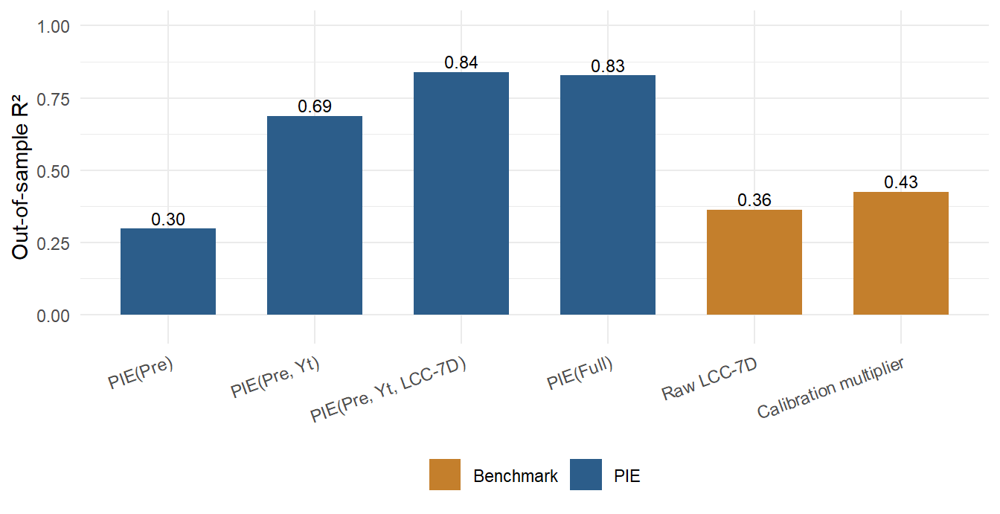
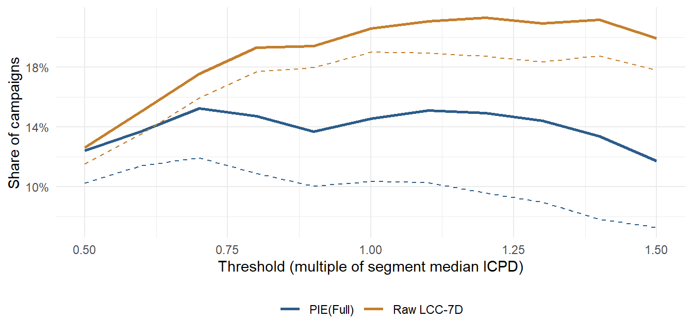

flowchart TB
subgraph Funnel["Purchase Funnel (firm's view)"]
direction TB
A1[Awareness] --> A2[Familiarity] --> A3[Consideration] --> A4[Purchase] --> A5[Loyalty]
end
subgraph Journey["Consumer Decision Journey (consumer's view)"]
direction TB
B1[Initial consideration set] --> B2[Active evaluation]
B2 --> B3[Moment of purchase]
B3 --> B4[Post-purchase experience]
B4 -->|loyalty loop| B1
B2 -->|set expands| B1
end
14 Advertising
Advertising is paid, mediated communication from an identified sponsor designed to shift what consumers know, feel, and ultimately do. It is among the largest discretionary line items a firm controls and one of the oldest objects of study in marketing, yet two facts about it remain in productive tension. The first is that advertising plainly works: a long tradition of meta-analysis and market-response modeling documents that it moves consumer mindsets, behavior, and—through those channels—firm value (Wang, Zhang, and Ouyang 2008; Hewett et al. 2016). The second is that, measured honestly, its average effect is small, noisy, and frequently indistinguishable from zero. The most rigorous modern field evidence finds that the bulk of brands earn statistically insignificant or negative advertising elasticities, that observational estimates are swamped by selection, and that a majority of observed advertising schedules carry negative marginal returns (Bradley T. Shapiro, Hitsch, and Tuchman 2021a; Bradley T. Shapiro, Hitsch, and Tuchman 2021b; Gordon et al. 2019a; R. A. Lewis and Rao 2015). Reconciling “advertising works” with “most advertising doesn’t pay” is the central problem of the field, and it is fundamentally a problem of measurement.
This chapter is organized around three lenses that the literature applies to that problem, and the reader who finishes it should be able to move fluently among them. The behavioral lens asks how an exposure is processed inside a single mind: which psychological stages a message must clear to change a belief, when affect substitutes for cognition, and how involvement moderates the route to persuasion. The theoretical lens asks how rational agents—consumers, advertisers, and intermediaries—interact when advertising is informative, intrusive, and costly. The econometric lens asks the hardest question of all: given non-experimental data in which firms advertise because they expect demand, how does one recover the causal effect of advertising rather than the spurious correlation between spending and the sales that motivated it? We treat the behavioral models as the source of testable mechanisms, the theoretical models as the source of equilibrium discipline, and the econometric models as the arbiter of what is actually true. Throughout, the unifying thread is that advertising’s effect is best understood not as a level but as an increment above a baseline—and that the entire empirical enterprise turns on how credibly that baseline is constructed (Gordon et al. 2021).
A note on scope and ethics frames everything that follows. Audiences dislike intrusive advertising, especially when they are vulnerable (Tybout and calkins 2005), and the welfare consequences of targeting, deception, and repetition recur as substantive questions rather than asides. Advertising that persuades by exploiting vulnerability is both a behavioral phenomenon and a regulatory one, and the chapter treats it as both.
14.1 The Behavioral Approach
The behavioral tradition opens the consumer’s head and asks what an advertisement has to accomplish there. Its oldest and most durable idea is that persuasion is a sequence of conditional stages, each of which can fail.
14.1.1 Persuasion as a Stochastic Information-Processing Chain
McGuire and Staelin (1983) models the effect of a persuasive communication as a chain of information-processing steps, each of which the receiver must clear before the next becomes possible. Because the steps are sequential and each is probabilistic, the probability that an exposure ultimately changes behavior is the product of the stage-wise conditional probabilities. Writing the stages as presentation (the message reaches the receiver), attention, comprehension, yielding (attitude change), retention (persistence of the new belief), and behavior, the persuasion probability is
\[ P(\text{behavior}) = P(\text{presentation}) \cdot P(\text{attention} \mid \text{presentation}) \cdot P(\text{comprehension} \mid \text{attention}) \cdot P(\text{yielding} \mid \text{comprehension}) \cdot P(\text{retention} \mid \text{yielding}) \cdot P(\text{behavior} \mid \text{retention}). \tag{14.1}\]
The multiplicative form in Equation 14.1 is the source of the model’s most useful implication: because the stages compound, a campaign is only as strong as its weakest link, and very high performance on one stage cannot rescue a near-zero probability on another. Each stage maps onto a distinct managerial lever and a distinct measurement instrument—presentation to reach and media weight, attention to recognition tests, comprehension to recall and semantic-differential profiles, yielding to measured attitude change, retention to delayed attitude measurement, and behavior to observed choice. The independent variables that move these probabilities are organized in McGuire and Staelin (1983) as a communication matrix crossing source, message, channel, receiver, and destination. Advertising appeals operate on the yielding stage through valence: positive (gain-framed) appeals reduce anxiety, negative (loss-framed) appeals raise it. The model’s chief limitation—and the seam along which later work pulled it apart—is its assumption of a single fixed hierarchy in which cognition always precedes affect which always precedes behavior.
Note
The “hierarchy of effects” tradition that Equation 14.1 formalizes traces to practitioner think-/feel-/do- models of the 1960s. Its scientific value is not the specific ordering, which is often wrong, but the discipline of decomposing a single aggregate effect into separately measurable conditional stages. Most modern diagnostics—funnels, brand-lift studies, attention metrics—are descendants of this decomposition.
14.1.2 From Funnel to Journey
The managerial counterpart to the processing chain is the purchase funnel: awareness, familiarity, consideration, purchase, and loyalty (with loyalty split into active and passive forms). The funnel is a firm’s-eye abstraction—a narrowing pipeline the marketer pushes prospects down. The influential reframing associated with McKinsey’s consumer decision journey replaces the narrowing funnel with a cyclical process organized around the consumer’s perspective: an initial consideration set, a phase of active evaluation in which the set can expand, a moment of purchase, and a post-purchase experience that feeds loyalty and future consideration. The two views are complementary rather than competing, as Figure 14.1 contrasts; a useful way to hold them together is that the journey adds a dimension the funnel suppresses, turning a one-directional narrowing into a recurring loop. Batra and Keller (2016) push this further into a dynamic, expanded customer decision journey that integrates paid, owned, and earned media across traditional and digital touchpoints and asks how communications interact across them.
14.1.3 Antecedents, Processing, and Consequences
The decisive theoretical advance over the fixed hierarchy is to treat advertising processing as a contingent system whose route depends on the consumer’s needs, motivation, ability, and opportunity. Maclnnis and Jaworski (1989) supply the canonical synthesis, organizing the field’s prior strands—the hierarchy-of-effects models, the multiattribute attitude and cognitive-response models of the 1970s—into a single antecedents → processing → consequences architecture.
On the antecedent side, needs are partitioned into utilitarian needs (functional problem-solving) and expressive needs, the latter splitting into socially expressive needs (to project or reflect a self-image) and experiential needs (to satisfy sensory or cognitive appetites). The pivotal antecedent is motivation to process brand information in the ad—what the consumer-behavior literature calls involvement—which may be situational (tied to the moment) or enduring (tied to the person). Motivation governs attention and processing capacity: higher motivation buys greater attention and greater capacity for analyzing the ad, but capacity is finite, so capacity spent on the ad is unavailable for competing tasks. Utilitarian needs direct attention to brand attributes; expressive needs direct it to symbolic and experiential value. Processing then proceeds through escalating levels— feature analysis, basic categorization, meaning analysis, information integration, role-taking, and constructive processing—moderated by ability and opportunity. The consequences are cognitive responses (thoughts) and emotional responses (feelings), and these can be partitioned by referent into message-related (brand-relevant), execution-related (brand-irrelevant), and viewing-context-related (environmental) responses. The architecture’s value is integrative: it subsumes the elaboration-likelihood model of persuasion (Petty and Cacioppo 1986), Mitchell’s brand-processing model, and Lutz’s typology of ad responses as special cases. A central testable claim is that attitude toward the ad (\(A_{\text{Ad}}\)) mediates attitude toward the brand (\(A_{\text{B}}\)) specifically at the higher processing levels—meaning analysis, information integration, and role-taking—implying a managerial trade-off between investing an ad’s finite real estate in brand/message content versus execution.
The complementary review by Vakratsas and Ambler (1999) abstracts across this entire literature with a single reduced-form schematic—advertising input passes through filters (e.g., motivation, ability) into the consumer’s cognition, affect, and experience, which in turn drive behavior—and then taxonomizes the field’s models by which of these mediators they admit and in what order. Table 14.1 organizes the principal families.
| Family | Mediating sequence | Core mechanism | Representative theory |
|---|---|---|---|
| Cognitive (C) | Cognition only | Information changes beliefs; price vs. non-price ads move price sensitivity asymmetrically | Information-economics models |
| Pure affect (A) | Affect only | Mere exposure; wear-in then wear-out yields an inverted-U | Two-factor / optimal-arousal theories |
| Persuasive hierarchy (CA) | Cognition → affect → behavior | Elaboration drives attitude; involvement moderates | ELM (Petty and Cacioppo 1986); Maclnnis and Jaworski (1989) |
| Low-involvement (CEA) | Cognition → experience → affect | Behavior precedes firm attitudes | Low-involvement learning |
| Integrative (CAE) | Cognition → affect → experience | Expectations then trial confirm/disconfirm | Two-stage trial models |
| Hierarchy-free (NH) | No fixed order | Route is contingent on context | Vakratsas and Ambler (1999) |
Two empirical generalizations survive this taxonomy and recur below. First, experience, affect, and cognition all serve as mediators of advertising effects, so a model that omits any one is misspecified for some product class. Second, short-term advertising elasticities are small and decline over the product life cycle—a behavioral fact that anticipates the econometric findings of Section 14.3. At the aggregate level, the venerable finding that roughly three exposures per purchase cycle is “optimal” reflects the same affective dynamics of wear-in and wear-out (Vakratsas and Ambler 1999). The broader program of cataloguing such regularities is synthesized by Wind and Sharp (2009), who compile a set of empirical generalizations about advertising while flagging the field’s persistent gaps in boundary conditions, advertising properties, and measurement.
14.1.4 Cognitive and Affective Mediators
The cognitive route formalizes persuasion as the algebra of the thoughts an ad provokes. Wright (1973) distinguishes three modes of spontaneous cognitive response— support arguments that reinforce the message, counterarguments that resist it, and source derogations that attack the communicator—and models acceptance as their weighted net balance,
\[ \text{Acceptance} = w_{\text{SA}} \sum_{i} \text{SA}_i - w_{\text{CA}} \sum_{j} \text{CA}_j - w_{\text{SD}} \sum_{k} \text{SD}_k, \tag{14.2}\]
where \(\text{SA}\), \(\text{CA}\), and \(\text{SD}\) count support arguments, counterarguments, and source derogations, and the weights \(w\) scale their persuasive impact. Equation 14.2 makes the cognitive-response prediction precise: anything that suppresses counterargument production—distraction, low involvement, or the message-relevant situational factors of content-processing involvement and message modality emphasized by Wright (1973)—mechanically raises acceptance. This is the engine behind Batra and Ray (1986a)’s analysis of repetition: repeated exposure raises brand attitude and purchase intention while support and counterargument production are low, but once such production rises, attitudes level off and then decline. Repetition’s benefit therefore wears out, and the wear-out can be pushed back by varying ad execution; the appropriate dosing interval is the purchase cycle, with roughly three exposures per cycle a common optimum. Ability, motivation, and opportunity are the antecedents that govern when this cognitive processing engages at all.
The affective route insists that evaluation does not reduce to cognition. The landmark statement is Zajonc (1980)’s, which deserves quotation because it reorients the entire downstream literature.
Preferences need no inferences: affective reactions to stimuli can be acquired first, can occur without extensive perceptual and cognitive encoding, and can influence subsequent judgments independently of and prior to cognition.
On this view affect is a system-1 response that can precede and bias the slower, deliberate system-2 cognition rather than following from it. The mechanisms are classical (Pavlovian) conditioning—an automatic physiological reaction transferred to a previously neutral stimulus—and evaluative conditioning, the direct transfer of affect from one stimulus to another, which Gibson (2008) shows (using implicit-measure designs) reshapes explicit attitudes mainly when no strong prior preference exists. A useful distinction within affect separates diffuse, long-lasting moods from discrete, source-specific emotions. The empirical payoff of taking affect seriously is large and well replicated: ad-evoked feelings raise brand attitudes both directly and indirectly through attitude toward the ad, across involvement levels and product types, with the effect strongest for hedonic rather than utilitarian products (Pham, Geuens, and De Pelsmacker 2013); emotional reactions mediate advertising’s effect on attitudes toward both ad and brand (Holbrook and Batra 1987); and attitude toward the ad itself shifts brand attitudes, with execution cues and source likeability mattering most in low-involvement settings (Batra and Ray 1986b; MacKenzie, Lutz, and Belch 1986; Mitchell and Olson 1981). Validated scales separate the hedonic and utilitarian dimensions of consumer attitude that this literature relies on (Batra and Ahtola 1991; Voss, Spangenberg, and Grohmann 2003).
Two further results sharpen the picture. Counterintuitively, momentary interruptions can promote persuasion by amplifying arousal and the need for completion, an effect concentrated among consumers low in need for cognition (Kupor and Tormala 2015). And when creative strategy is decomposed into composite content metrics, the components rank by their effect on advertising elasticity in a clear order—experiential content first, then cognitive, then affective (Dall’Olio and Vakratsas 2022)—a finding that gives the cognition/affect/experience trichotomy of Table 14.1 direct managerial teeth.
A distinct memory mechanism complicates all of the above: ads do not arrive in isolation. Burke and Srull (1988) document competitive interference, in which one ad degrades memory for another. Memory for a brand’s ad is impaired retroactively by later ads—both from competitors in the same class and from other products in the same manufacturer’s line—and proactively by prior ads, and the memory benefit of repetition is itself blunted by the presence of competing advertising. Interference is why elasticities estimated in clutter-free laboratories overstate field effects, a theme Section 14.3 returns to.
14.1.5 Involvement and the Two Routes to Persuasion
The construct that organizes the behavioral literature’s contingencies is involvement—loosely, how deeply a consumer wants to think about a product. Two frameworks dominate: the elaboration-likelihood model (ELM) (Petty and Cacioppo 1979) and the heuristic-systematic model (Chaiken 1980). The ELM’s core claim is that persuasion travels one of two routes. The central route engages effortful elaboration of message arguments; attitudes formed this way are durable and predictive of behavior. The peripheral route relies on cues outside the argument—source attractiveness, mere repetition, mood—and yields attitudes that are temporary and weakly predictive. Petty, Cacioppo, and Schumann (1983) supply the canonical demonstration via a crossover interaction: argument quality moves attitudes more under high involvement, while a peripheral cue (a celebrity endorser versus an ordinary one) moves attitudes more under low involvement. This single experiment is the field’s cleanest evidence that message content and executional cues are substitutes whose relative potency is governed by involvement.
A terminological caution
Petty and Cacioppo (1986) frame the central/peripheral distinction in terms of motivation rather than involvement, and there is a methodological reason to follow them: the involvement construct is notoriously fragmented across the literature, so framing results in terms of motivation invites less definitional dispute. The marketing literature further unbundles the ELM’s “ability” into separate ability and opportunity factors, yielding the motivation–ability–opportunity (MAO) triad as the joint antecedent of elaboration (Petty, Cacioppo, and Schumann 1983). For review and operationalization, Muehling, Laczniak, and Andrews (1993) is the preferable entry point, with Andrews, Durvasula, and Akhter (1990) a complement and Zaichkowsky (1985) the canonical scale.
The most rigorous theoretical treatment of involvement is Greenwald and Leavitt (1984)’s, which recovers the construct from a cognitive-capacity foundation rather than a managerial one. They distinguish attentional capacity (the limited resource Kahneman calls effort, demanded in increasing amounts as task complexity rises) from attentional arousal (a state of wakefulness that facilitates well-learned responses), and array processing into four levels of increasing depth: preattention (little capacity), focal attention (modest capacity to decipher the message), comprehension (capacity to analyze it), and elaboration (capacity to integrate it into existing knowledge). Their principle of higher-level dominance states that when the effects of different processing levels oppose one another, the highest engaged level dominates the net result—deeper, more deliberate judgment wins. They also draw the conceptual line, since muddied, between involvement (the audience/observer’s depth of processing) and what is better termed engagement (the actor/participant’s behavior). That distinction has acquired fresh empirical content online, where Schivinski, Christodoulides, and Dabrowski (2016), building on Muntinga, Moorman, and Smit (2011), scale consumer engagement along three escalating tiers—consumption (viewing, reading), contribution (liking, sharing, commenting), and creation (posting, producing content).
Involvement also moderates the affective route. Batra and Stayman (1990) show that positive mood reduces cognitive elaboration and biases the perceived quality of arguments, allowing mood to influence brand attitudes peripherally. Macinnis, Rao, and Weiss (2002) add a maturity condition: because affective processing requires no motivation while the persuasive use of endorsers does, affectively based executional cues most reliably lift sales for mature, familiar brands whose consumers already possess the relevant product knowledge. A standing caution from the meta-analytic literature is that laboratory advertising studies diverge from the field precisely on the dimensions that involvement implicates: forced exposure, unmeasured choice, and the absence of competitive clutter, decay, repeated exposure, and brand maturity.
14.1.6 Visual Cues
Finally, the visual construal of an advertisement interacts with the brand’s positioning to determine willingness to pay. Chu, Chang, and Lee (2021) show that the effect of the visual distance between the depicted product and the consumer flips with brand image: for prestige brands associated with status and luxury, attitudes and willingness to pay a premium rise as that distance grows (distance connotes exclusivity), whereas for popular brands associated with broad appeal and social connectedness, closeness is what lifts attitudes and willingness to pay. Visual strategy is therefore not separable from positioning—the same image is an asset for one brand archetype and a liability for the other.
Depiction does more than set a mood. Elder and Krishna (2012) show that orienting a product toward the viewer’s dominant hand — a coffee cup with its handle on the right — raises purchase intention by making mental simulation of use easier, an effect that disappears when the simulation is blocked. The same logic governs emotional imagery: Small and Verrochi (2009) find that a charity appeal showing a sad rather than a happy or neutral face raises giving, because the expression carries the need rather than merely the identity of the beneficiary. Which emotion the appeal targets is a separate lever from how vividly it is depicted: Aaker and Williams (1998) show that empathy-based and pride-based appeals recruit different self-related processing and succeed with different audiences. Humor, the most-used and least-understood execution device, resolves similarly once moderators are accounted for: the meta-analytic estimate is positive on attention and attitude but conditional on relatedness to the product and on the audience (Eisend 2008).
The behavioral results above are not a loose collection of findings but the surface of a small number of governing theories, and naming them clarifies why the mechanisms recur. The organizing theory is dual-process persuasion, formalized for marketing by the elaboration likelihood model (Petty and Cacioppo 1986; Petty, Cacioppo, and Schumann 1983) and its heuristic-systematic cousin (Chaiken 1980): an exposure is processed either through an effortful central route that scrutinizes argument quality or through a peripheral route that leans on cues, and which route engages depends on the receiver’s motivation and ability. This is the same fast/slow distinction that Zajonc (1980) invokes when affect precedes cognition, and it explains why involvement moderates nearly every behavioral result in the chapter. The hierarchy-of-effects tradition supplies the complementary idea that persuasion is a sequence of separately measurable conditional stages (Equation 14.1), so that a single aggregate effect decomposes into stages each governed by its own lever; the contingent-route view of Maclnnis and Jaworski (1989) and Vakratsas and Ambler (1999) is what frees that hierarchy from a single fixed ordering.
Three further theories account for effects the route models do not. Mere exposure holds that repetition alone raises liking even absent recognition (Zajonc 1980), grounding the wear-in half of the repetition dynamics. Attitude theory, in the reasoned-action and planned-behavior tradition, links the attitudes an ad forms to intentions and ultimately behavior (Ajzen 1991), supplying the causal chain that the funnel and the processing models presuppose. And attention economics treats the consumer’s processing capacity as the genuinely scarce resource (Greenwald and Leavitt 1984): a message competes not against rival arguments but against everything else contending for finite attention, which is why competitive interference degrades recall and why attention metrics anchor modern diagnostics. Finally, the behavioral-economics strand enters advertising through salience and framing: decision weights tilt toward attributes that stand out in the context (Bordalo, Gennaioli, and Shleifer 2013), and logically equivalent gain- versus loss-framed appeals move choice differently because outcomes are judged against a reference point rather than in absolute terms (Tversky and Kahneman 1981; Kahneman and Tversky 1979). Framing is thus the behavioral-economics formalization of the valence lever that Equation 14.1 locates at the yielding stage.
14.2 The Theoretical Approach
The behavioral models describe a single mind; the theoretical approach asks what happens when consumers, advertisers, and intermediaries are strategic. The exemplar here is the economics of privacy and targeting. Choi, Jerath, and Sarvary (2023) build an analytical model with three classes of actor—consumers, an advertiser, and an ad network—in which advertising is genuinely valuable (it conveys product information that guides the purchase journey) but also costly to the consumer along two margins: a distaste for online tracking and ad wear-out from repetition. Tracking lets the advertiser infer a consumer’s journey stage and target accordingly, so the consumer’s opt-in decision trades the benefit of more relevant information against the cost of wear-out.
The model’s value is that it generates non-obvious comparative statics that no purely behavioral account would predict. Consumers opt in to tracking when ad effectiveness is intermediate or when their sensitivity to wear-out is low; and—counterintuitively— opting in can reduce the number of repeat ads a consumer receives when effectiveness is intermediate, because targeting substitutes relevance for repetition. Most strikingly, higher ad effectiveness, though good for the advertiser per exposure, can lower the ad network’s profit by reducing the number of repeated ads it can sell. These results carry directly into policy: by deriving why a rational consumer would or would not consent to tracking, the model gives regulators contemplating consent requirements a structural account of who opts in and what it does to surplus on all sides of the market. The general lesson is that targeting and repetition are equilibrium objects—choosing them well requires modeling the consumer’s reaction, not just the firm’s.
14.3 The Econometric Approach
The behavioral and theoretical lenses generate mechanisms; the econometric lens asks which of them survive contact with real, non-experimental data. Its defining problem is endogeneity. Firms do not assign advertising at random—they spend because they forecast demand, target their best markets and best-timed weeks, and cut spending when they expect to sell poorly anyway. Let \(y_{it}\) be a sales outcome for unit \(i\) in period \(t\) and \(a_{it}\) advertising. The naïve regression
\[ y_{it} = \beta\, a_{it} + \mathbf{x}_{it}^{\top}\boldsymbol{\gamma} + \varepsilon_{it} \tag{14.3}\]
recovers the causal advertising effect \(\beta\) only if \(\mathbb{E}[\varepsilon_{it}\,a_{it}]=0\). That condition almost never holds: any demand shock the firm anticipates and responds to (a holiday, a competitor’s exit, favorable weather) enters \(\varepsilon_{it}\) and is correlated with \(a_{it}\), biasing \(\hat\beta\). Because firms target favorable conditions, the bias is typically positive, so naïve estimates overstate effectiveness—and the bias can be large relative to the true effect.
The benchmark that disciplines this literature is the randomized experiment, and where experiments exist they are sobering. R. A. Lewis and Rao (2015) and Gordon et al. (2019a) demonstrate that advertising effects are so small relative to the variance of sales that observational methods routinely fail to recover them—producing estimates that may be too large or too small by orders of magnitude—and that even large field experiments require enormous samples to detect plausible effects. The correct conceptual target, following Gordon et al. (2021), is the incremental effect: the lift in behavior above the baseline the consumer would have exhibited absent the ad. When randomization is infeasible, the practical remedy is to construct a credible baseline—for instance, panel data across geographic markets that lets one estimate each market’s no-advertising counterfactual and read the advertising effect as the deviation from it. Table 14.2 summarizes the principal strategies and what breaks each.
| Strategy | Identifying assumption | What breaks it |
|---|---|---|
| Naïve regression (Equation 14.3) | Advertising uncorrelated with demand shocks | Targeting/timing of spend (almost always violated) |
| Randomized experiment | Exposure assigned at random | Infeasibility, scale, non-compliance, spillovers |
| Panel / fixed effects + geo baseline | Unobservables constant within unit; cross-market counterfactual valid | Time-varying shocks correlated with spend |
| Instrumental variables | Instrument moves ads but not demand directly | Weak or invalid (non-excludable) instruments |
| Quasi-experiment / regulatory shock | Treatment timing as-good-as-random | Confounding co-events (e.g., algorithm changes) |
| Border / discontinuity designs | Outcomes continuous across an ad-market boundary | Sorting or other discontinuities at the border |
14.3.1 A Simulation of the Endogeneity Problem
The bias in Equation 14.3 is concrete enough to reproduce. The following simulation constructs markets in which a manager sets advertising as an increasing function of a demand shock she observes but the analyst does not. The naïve regression then recovers a coefficient far above the true effect, while a specification that conditions on the shock recovers the truth—illustrating why a credible baseline is the whole game.
Code
set.seed(10)
n_markets <- 2000
true_beta <- 0.5 # the causal advertising effect we want back
# Demand shock the MANAGER sees but the ANALYST does not (the confounder)
demand_shock <- rnorm(n_markets, 0, 1)
# Manager targets favorable markets: spend rises with the anticipated shock
advertising <- 2 + 1.2 * demand_shock + rnorm(n_markets, 0, 0.5)
# Sales depend on advertising (true_beta) AND the same hidden shock
sales <- 5 + true_beta * advertising + 2.0 * demand_shock + rnorm(n_markets, 0, 1)
naive <- coef(lm(sales ~ advertising))["advertising"]
adjusted <- coef(lm(sales ~ advertising + demand_shock))["advertising"]
cat("True effect :", true_beta, "\n")
#> True effect : 0.5
cat("Naive estimate :", round(naive, 3), " (biased upward)\n")
#> Naive estimate : 1.915 (biased upward)
cat("Baseline-adjusted :", round(adjusted, 3), " (recovers the truth)\n")
#> Baseline-adjusted : 0.484 (recovers the truth)The naïve estimate is biased upward by exactly the mechanism Gordon et al. (2019a) warn about: the manager’s targeting loads the omitted shock onto the advertising coefficient. Only when the analyst controls the demand baseline—the empirical analogue of a randomized control group or a cross-market counterfactual—does the estimate return to the truth.
14.3.2 Estimating Advertising Effects and Elasticities
Once identification is taken seriously, the estimated magnitudes shrink. Bradley T. Shapiro, Hitsch, and Tuchman (2021b) estimate the distribution of TV advertising elasticities and returns across a large set of product categories and find elasticities below prior benchmarks, a large share of estimates statistically insignificant or negative, and—on the return side—over 80% of brands facing negative marginal returns, with only about a third earning a positive return from their observed schedule. The pattern is robust to functional form and is not an artifact of low power or measurement error, echoing the prior-distribution evidence in Bradley T. Shapiro, Hitsch, and Tuchman (2021a) that a substantial share of consumer-packaged-goods elasticities are insignificant or negative. The collected experimental and quasi-experimental program— Bradley T. Shapiro (2018), Blake and Coey (2014), R. A. Lewis, Rao, and Reiley (2011), Guitart and Stremersch (2021)—reinforces the same conclusion: credibly identified advertising effects are small, heterogeneous, and frequently unprofitable at the margin.
Controversy: can you measure advertising returns without an experiment?
This is the most commercially consequential methodological dispute in marketing, because the entire attribution industry rests on the answer being yes, and the strongest evidence says mostly no.
2015 — the statistical-power argument. R. A. Lewis and Rao (2015) make the case in the title: The Unfavorable Economics of Measuring the Returns to Advertising. Advertising effects are small relative to the variance of sales, so the sample sizes required to detect them reliably are enormous—far larger than the observational analyses routinely used to justify budgets. The problem is not that analysts choose bad methods; it is that the signal-to-noise ratio is punishing even when they choose well.
2015 — the field experiment that embarrassed a channel. Blake, Nosko, and Tadelis (2015), in Econometrica, run a large-scale experiment on brand-keyword paid search and find near-zero incremental value: consumers who would have arrived anyway were being counted as conversions the channel had caused. An entire spend category was, on this evidence, buying traffic it already had.
2019 — observational methods benchmarked against experiments. Gordon et al. (2019b) compare approaches head to head using large field experiments at Facebook as ground truth, and find that observational methods diverge substantially from the experimental benchmark—not with a consistent bias one could correct, which would be manageable, but variably.
2023 — richer data do not rescue observational methods. Gordon, Moakler, and Zettelmeyer (2023) give double/debiased machine learning and stratified propensity-score matching more than 5,000 user-level features across 663 Facebook experiments. Neither recovers the experimental lifts reliably.
2026 — the assumption that fails may be overlap, not unconfoundedness. Rafieian (2026) argues that on an auction-based platform the assignment rule is logged, so selection on unobservables is not the binding problem. The binding problem is that auctions are deterministic: many users have essentially no chance, or no chance of avoiding, seeing a given ad. More features cannot fix a propensity of zero or one (Section 14.5).
2026 — a third answer: predict, don’t identify. Gordon, Moakler, and Zettelmeyer (2026) stop asking observational data to identify the effect and use a library of experiments to predict it for campaigns that were never tested (Section 14.4). Amazon runs a version of the method in production, and Meta’s incremental attribution uses similar ingredients.
The other side, which is not a rebuttal. Attribution modeling (Li and Kannan 2014a; Berman 2018) remains genuinely useful, and its defenders do not generally claim it recovers incrementality. They claim it allocates budget sensibly under stated assumptions. That is a weaker and more defensible claim, and the confusion in practice comes from firms treating an allocation tool as though it were an incrementality estimate.
The practical division. Use experiments to answer whether advertising works and by how much. Use attribution to answer where to put the next dollar given that it works, and say out loud which assumptions that answer rests on. The failure mode is a dashboard reporting attributed conversions as though they were causal effects, in a decision meeting where nobody asks which of the two questions is being answered. Chapter 44 develops the identification requirements.
These small short-run elasticities are consistent with the behavioral prediction of Vakratsas and Ambler (1999) that elasticities decline over the life cycle, and they motivate the search for effects on outcomes other than immediate own-brand sales—word of mouth, website traffic, firm value—where advertising’s influence may be larger or more reliably detected.
Controversy: the constructive kind, in one issue of IJRM
Not every published disagreement is adversarial, and it is worth seeing the alternative format, because it is rarer and better. In volume 31, issue 1 of the International Journal of Research in Marketing, four papers appear in sequence across pages 2 to 34.
Pages 2–15. Gijsenberg (2014b) asks whether firms should increase advertising around major sports events, and finds the case for doing so considerably weaker than practice assumes—the title puts it as investigating the “(non)sense” of the practice.
Pages 16–29. Mazodier and Quester (2014b) study a neighbouring question with different data and a different method, using latent growth modeling to examine how sponsorship fit changes brand affect over time.
Pages 30–32. Gijsenberg (2014a) writes a comment on the other team’s paper, subtitled A Comparison of Two Studies and a Call for Action.
Pages 33–34. Mazodier and Quester (2014a) write a comment on his.
Two independent teams, working the same substantive territory from different methodological directions, each publicly reading and responding to the other’s work in the issue that carries both. Nobody is corrected and nobody is defending priority. The output is a reader who, in thirty-two pages, gets two studies plus each team’s account of what the other’s design can and cannot establish—which is a far more efficient way to learn the state of a question than reading the two papers years apart and reconciling them alone.
The contrast with the adversarial genre catalogued in Section 77.8.5 is instructive. Both formats put disagreement in print. Only this one is designed to be read as a unit, and it requires an editor willing to coordinate it.
14.3.3 Carryover and the Optimal Data Interval
Every elasticity in the previous section presumes an answer to a prior question: over what horizon does advertising act? Advertising’s effect is not contemporaneous. An exposure today raises sales today and—through memory, deferred purchase, and word of mouth—raises them tomorrow, next week, and progressively less thereafter. The canonical representation of this decay is the geometric distributed lag, in which a single immediate coefficient \(\beta\) governs the impact of current advertising \(a_t\) and a single carryover parameter \(\lambda \in [0,1)\) geometrically discounts all past exposures,
\[ s_t = \mu + \beta \sum_{k=0}^{\infty} \lambda^{k} a_{t-k} + \varepsilon_t . \tag{14.4}\]
The infinite sum in Equation 14.4 is not directly estimable, but the Koyck transformation—subtracting \(\lambda s_{t-1}\) from \(s_t\)—collapses it into a finite autoregressive form,
\[ s_t = \mu(1-\lambda) + \lambda\, s_{t-1} + \beta\, a_t + \underbrace{\varepsilon_t - \lambda \varepsilon_{t-1}}_{\text{MA(1) error}} . \tag{14.5}\]
Equation 14.5 is the workhorse of advertising dynamics: a regression of sales on its own lag and current advertising recovers the carryover \(\lambda\) as the coefficient on \(s_{t-1}\) and the immediate effect \(\beta\) as the coefficient on \(a_t\), and the long-run multiplier—the total cumulative effect of a permanent one-unit increase in advertising—is \(\beta/(1-\lambda)\). The price of the transformation is the moving-average error it induces, which makes ordinary least squares biased in finite samples and is the reason instrumental-variables or maximum-likelihood corrections appear throughout this literature.
A subtler and more consequential problem precedes estimation, however: at what data interval should Equation 14.5 be fit? Scanner systems deliver sales and advertising at intervals from seconds to months, and the carryover estimate is not invariant to the choice. Tellis and Franses (2006) confront the conventional wisdom directly. It had been “long known in marketing and econometrics that temporally aggregated data biases estimates of the duration of advertising’s effect” (Clarke 1976; Leone 1995), and the received remedy, seeded by Clarke (1976) and hardened into an axiom over the following decades, held three things: (i) the optimal interval is the interpurchase time, (ii) data more disaggregate than this causes a “disaggregation bias,” and (iii) recovering the true parameters requires assuming a model of the underlying advertising process. Tellis and Franses (2006) overturn all three. The optimal interval is instead what they call the unit exposure time—“the largest calendar period in the time frame under study such that advertising exposure occurs at most once in that period, and if it occurs, it does so at the same time in that period.” Data more disaggregate than the unit exposure time carries no disaggregation bias (it merely costs more to store and process); and recovery of the true microparameters requires only data at the unit exposure time together with the correctly adjusted model—no assumption about the advertising process itself. The result holds for any linear dynamic model linking sales to current and past advertising.
The unit exposure time is governed by the advertising schedule, not the purchase cycle. If a brand runs one television flight a week, the largest period containing at most one exposure is the week, so the unit exposure time is one week; if it advertises on fixed days, the unit exposure time is a day; for monthly magazine insertions it is a month. The mechanism that makes this the right interval is misattribution under aggregation: a data interval coarser than the unit exposure time lumps several exposures into one bucket, assigns them all to a single arbitrary point, and attributes the blended decay of all of them as if it were one average effect—“inappropriate attribution [that] exaggerates the duration interval.” A data interval at or finer than the unit exposure time keeps successive exposures in separate buckets and so is free of this misattribution.
Crucially, recovering the true microparameters from data at the unit exposure time requires the adjusted model, not the naïve one. Aggregating Equation 14.5 over \(K\) microperiods (with the single pulse occurring at position \(i\) within each period) yields an extended Koyck model carrying an additional lagged-advertising term,
\[ S_T = \lambda^{K} S_{T-1} + \beta_1 A_T + \beta_2 A_{T-1} + \varepsilon_T - \lambda^{K}\varepsilon_{T-1}, \qquad \beta_1 = \beta\!\!\sum_{k=0}^{K-i}\!\lambda^{k},\;\; \beta_2 = \beta\!\!\sum_{k=K-i+1}^{K-1}\!\lambda^{k}, \tag{14.6}\]
from which the true microparameters are recovered as \(\lambda = \widehat{\lambda^{K}}^{\,1/K}\) and \(\beta = (\beta_1+\beta_2)(1-\lambda)/(1-\lambda^{K})\). Fitting the original Koyck Equation 14.5—the same model used on the microdata—to aggregated data omits the \(A_{T-1}\) term and is exactly the misspecification that produces the classic data-interval bias. The following replication of Tellis and Franses (2006)’s DGP1 makes both the bias and its repair concrete. A daily Koyck process is simulated with a true current effect \(\beta = 1\) and a true daily carryover \(\lambda = 0.9\) (long-run multiplier \(\beta/(1-\lambda)=10\)), with a single advertising pulse each week (every Thursday)—so the unit exposure time is one week. The series is then estimated three ways: the original Koyck on the daily microdata; the same (wrong) Koyck on the weekly data; the extended Koyck Equation 14.6 on the weekly data (the unit exposure time); and the original Koyck on monthly data (coarser than the unit exposure time).
Code
library(tidyverse)
set.seed(1)
# --- True DAILY data-generating process: DGP1 of Tellis & Franses (2006) ---
beta <- 1; lambda <- 0.9 # current effect; daily carryover
daily <- expand.grid(
day = c("mon", "tue", "wed", "thu", "fri", "sat", "sun"),
week = 1:4, month = 1:12, year = 1:30
) |>
tibble::rowid_to_column("t") |>
mutate(
ad = if_else(day == "thu", runif(n()), 0), # ONE pulse per week (Thursday)
e = rnorm(n(), 0, 0.1),
sales = 0
)
for (t in 2:nrow(daily)) { # generate the Koyck dynamics
daily$sales[t] <- lambda * daily$sales[t - 1] + beta * daily$ad[t] +
daily$e[t] - lambda * daily$e[t - 1]
}
daily <- slice(daily, -1) # drop the seeded first row
# Aggregate to weekly and monthly buckets, in true time order
weekly <- daily |> group_by(year, month, week) |>
summarise(sales = sum(sales), ad = sum(ad), .groups = "drop") |>
arrange(year, month, week)
monthly <- daily |> group_by(year, month) |>
summarise(sales = sum(sales), ad = sum(ad), .groups = "drop") |>
arrange(year, month)
# (a) ORIGINAL Koyck: sales_t = lambda*sales_{t-1} + beta*ad_t
koyck <- function(d) {
s <- summary(lm(sales ~ lag(sales) + ad - 1, data = d))$coefficients
c(lambda_hat = s[1, 1], beta_hat = s[2, 1])
}
# (b) EXTENDED Koyck at the unit exposure time (K microperiods per UET):
# S_T = lambda^K S_{T-1} + b1 A_T + b2 A_{T-1}, then recover
# lambda = phi^(1/K) and beta = (b1 + b2)(1 - lambda) / (1 - phi).
koyck_ext <- function(d, K) {
s <- summary(lm(sales ~ lag(sales) + ad + lag(ad) - 1, data = d))$coefficients
phi <- s[1, 1]; b1 <- s[2, 1]; b2 <- s[3, 1]
lam <- phi^(1 / K); bet <- (b1 + b2) * (1 - lam) / (1 - phi)
c(lambda_hat = lam, beta_hat = bet)
}
results <- bind_rows(
c(interval = "daily (microdata, orig. Koyck)", koyck(daily)),
c(interval = "weekly (orig. Koyck = wrong model)", koyck(weekly)),
c(interval = "weekly (extended Koyck = UET)", koyck_ext(weekly, 7)),
c(interval = "monthly (orig. Koyck, > UET)", koyck(monthly))
) |>
mutate(
across(c(lambda_hat, beta_hat), \(x) round(as.numeric(x), 3)),
long_run_hat = round(beta_hat / (1 - lambda_hat), 2),
lambda_true = lambda, beta_true = beta, long_run_true = beta / (1 - lambda)
)
results
#> # A tibble: 4 × 7
#> interval lambda_hat beta_hat long_run_hat lambda_true beta_true long_run_true
#> <chr> <dbl> <dbl> <dbl> <dbl> <dbl> <dbl>
#> 1 daily (… 0.885 1.01 8.81 0.9 1 10
#> 2 weekly (… 0.664 3.37 10.0 0.9 1 10
#> 3 weekly (… 0.895 1.04 9.93 0.9 1 10
#> 4 monthly … 0.27 7.26 9.95 0.9 1 10The pattern reproduces Tellis and Franses (2006)’s Table 1. On the daily microdata the original Koyck returns the truth (\(\hat\lambda \approx 0.89\), \(\hat\beta \approx 1.0\)). Fitting that same model to the weekly data is badly biased—\(\hat\lambda\) collapses toward zero (to \(\approx 0.66\)) and \(\hat\beta\) inflates several-fold (to \(\approx 3.4\))—which is precisely the “data-interval bias” that Clarke (1976) documented and that the older literature wrongly blamed on choosing too fine an interval. The repair is not finer data but the right model at the unit exposure time: the extended Koyck Equation 14.6 fitted to the same weekly data recovers the true microparameters (\(\hat\lambda \approx 0.90\), \(\hat\beta \approx 1.0\)). This is Tellis and Franses (2006)’s central result—the week, not some interpurchase cycle, is the optimal interval, and one need not assume anything about the advertising process to get there. Daily data would also recover the truth (with no disaggregation bias), but the week is optimal because it is the largest, and therefore the cheapest to collect, interval that still admits unbiased recovery. Aggregating beyond the unit exposure time, however, is fatal: a month holds four Thursday pulses, so even the extended single-lag model cannot disentangle them, and the monthly original Koyck is severely biased (\(\hat\beta \approx 7\)). One quantity is notably robust—the long-run multiplier \(\beta/(1-\lambda)\) stays near its true value of \(10\) at every interval, because the cumulative effect is conserved even as its split into a quick hit and a slow decay is scrambled. The managerial lesson is sharp: a firm that fits a naïve carryover model to monthly data will conclude that advertising has almost no memory and a large instantaneous punch—precisely backwards—and will flight its budget wrongly, even though its estimate of advertising’s total return is roughly right. The fix is to collect at the unit exposure time and adjust the model, not to chase ever-finer data or to default to the purchase cycle.
14.3.4 Advertising’s Effects on Word of Mouth, Traffic, and Firm Value
A productive response to small sales elasticities is to widen the dependent variable. Advertising shapes price sensitivity through the consideration set and the relative strength of preference (Mitra and Lynch, Jr. 1995), and informative advertising reduces the probability that a horizontally differentiated consumer fails to choose her best alternative by roughly ten percent (Anand and Shachar 2011). A large body of work then traces advertising into online outcomes. TV advertising measurably moves online word of mouth (WOM) about both the brand and the program—the phenomenon of social TV, the joint consumption of a program and social-media activity about it (Fossen and Schweidel 2017)—and ads aired in programs with higher social-TV activity drive more online shopping, with affective (funny, emotional) ads most effective (Fossen and Schweidel 2019b). Crucially, the most-discussed programs are not always the best vehicles for brand engagement, and online program engagement predicts a larger ad audience because engaged viewers are less likely to change channels during breaks (Fossen and Bleier 2021). Product placement follows the same logic: prominent, especially verbal, placements raise online conversation and web traffic, with decreasing returns at high prominence and little enhancement from nearby TV advertising (Fossen and Schweidel 2019a).
When advertising and consumer-generated media are modeled jointly, content classification becomes decisive. For movies, pre-release blog volume and advertising drive opening-day box office while post-release blog valence and advertising drive later performance, with effects heterogeneous across markets in ways tied to demographics and identifiable through instrumental variables (Gopinath, Chintagunta, and Venkataraman 2013). Over a product’s life, only recommendation-oriented WOM valence directly moves sales—not sheer WOM volume—and its influence grows over time while both attribute- and emotion-based advertising wear out, with rational attribute messages wearing out faster than emotional ones (Gopinath, Thomas, and Krishnamurthi 2014). The same architecture lets firms be classified as consumer-driven (WOM dominant) or firm-driven (advertising dominant), which dictates where the marketing dollar should go. The macro view—Hewett et al. (2016)—finds that advertising does not directly move traditional media, online WOM, or consumer sentiment, yet does directly affect firm outcomes, underscoring that the channel through which advertising pays varies by context.
Advertising’s reach extends to capital markets and even to public welfare. Fich, Starks, and Tran (2024) show that target-firm advertising raises takeover premiums and negotiating power while lowering acquirer announcement returns—consistent with targets using advertising to communicate value to investors and acquirers—so that even failed bids leave a permanent value gain. Ownership structure feeds back onto advertising: under common ownership, competing firms with shared institutional blockholders cut advertising, an effect identified using mutual-fund mergers as an exogenous shock and concentrated in competitive, advertising-intensive industries (Lu et al. 2022). The spillovers of a rival’s bankruptcy depend on a firm’s own marketing investments, moderated by industry growth (for advertising) and concentration (for R&D) (Jindal and Slotegraaf 2023). And advertising can move societal outcomes: during the COVID-19 pandemic, TV ads carrying COVID narratives raised social-distancing behavior—eleven times more in counties without government mandates—identified through a border strategy exploiting discontinuities across TV markets, evidence that brand-sponsored advertising can substitute for absent public policy (Ghosh Dastidar, Sunder, and Shah 2023).
14.3.5 Spillovers and Attribution
Two econometric problems deserve separate treatment because they recur across digital channels. The first is spillover: an ad’s effect is not confined to its target. Fossen, Mallapragada, and De (2021) show that political TV ads exert positive ad-to-ad spillovers—the ad following a political ad suffers an 89% smaller audience decline and gains positive online chatter—filling a gap in research that had largely ignored how one ad conditions response to the next. A rich literature on search and display spillovers (Kitts et al. 2014; Joo et al. 2014; Sahni 2016; Yang and Ghose 2010; Ghose and Todri-Adamopoulos 2016; Rutz and Bucklin 2011) establishes that estimating an ad’s effect while ignoring its interaction with adjacent advertising biases the estimate, often badly.
The second is attribution: assigning credit for a conversion across the many touchpoints that preceded it (Simonson et al. 2001; Lambrecht and Tucker 2013; Li and Kannan 2014b; Blake, Nosko, and Tadelis 2015; Zantedeschi, Feit, and Bradlow 2017). Attribution is hard for the same reason Equation 14.3 is biased—the touchpoints a consumer encounters are selected, not assigned—so last-click and similar heuristics confound correlation with cause. The methodological lesson is uniform across spillover and attribution: the unit of analysis is rarely a single isolated exposure, and treating it as one reintroduces the endogeneity the field works so hard to remove.
14.3.6 Advertising Content and Consumer Demand for Ads
Two further econometric streams round out the picture. A content literature (Xu et al. 2014; Teixeira, Picard, and el Kaliouby 2014; Tucker 2015; Liaukonyte, Teixeira, and Wilbur 2015; Rao and Wang 2017; Sudhir, Roy, and Cherian 2016) measures how what an ad says and shows—its emotional arc, its information content, its persuasive devices—maps to attention, sharing, and purchase, connecting the behavioral creative-strategy results of Dall’Olio and Vakratsas (2022) to field outcomes. And a demand-for-ads literature (Goldstein et al. 2014; Wilbur 2016; Tuchman, Nair, and Gardete 2017) treats advertising as something consumers themselves have preferences over—tolerating, avoiding, or even seeking it— which closes the loop back to the theoretical model of Choi, Jerath, and Sarvary (2023): if consumers choose their exposure, advertising volume and targeting are equilibrium outcomes, not exogenous treatments.
14.3.7 Deceptive Advertising
The welfare and regulatory edge of advertising is sharpest where messages are deceptive. Regulatory reports of deceptive advertising depress stock-market performance, an effect that strong brand reputation partially buffers (Wiles et al. 2010). The consumer-side consequence is longer-lived than the market’s: Darke and Ritchie (2007) show that a single experience of deception generalizes into defensive stereotyping — distrust that transfers to unrelated firms and advertisements — so the externality of a deceptive campaign falls partly on competitors who did nothing. A related credibility question arises where third-party evaluation substitutes for advertising altogether: Basuroy, Chatterjee, and Ravid (2003) separate critics’ influence on demand from their predictive role, finding both present but negative reviews mattering more, which is the asymmetry any earned-media valuation has to respect. Rao (2022) study a particularly modern form—fake-news advertising, promotional content that mimics the format of surrounding news without disclosure—and ask what happens when the Federal Trade Commission shuts the channel down. The accounting framework decomposes a merchant’s demand into organic visits, fake-news-ad referrals, and regular-ad referrals, allowing direct effects and cross-channel spillovers to be separated:
\[ \begin{aligned} Q_{\text{merchant}} &= Q_{\text{org}} + Q_{\text{fn}} + Q_{\text{reg}}, \\ Q_{\text{org}} &= \alpha_{\text{org}} + \gamma_1^{\text{fn}} Ad_{\text{fn}} + \gamma_1^{\text{reg}} Ad_{\text{reg}}, \\ Q_{\text{fn}} &= \alpha_{\text{fn}} Ad_{\text{fn}} + \gamma_2^{\text{reg}} Ad_{\text{reg}}\, \mathbb{I}(Ad_{\text{fn}} > 0), \\ Q_{\text{reg}} &= \alpha_{\text{reg}} Ad_{\text{reg}} + \gamma_3^{\text{fn}} Ad_{\text{fn}}\, \mathbb{I}(Ad_{\text{reg}} > 0), \end{aligned} \tag{14.7}\]
where the \(\alpha\) terms are direct effects and the \(\gamma\) terms cross-channel spillovers, with \(fn\) denoting fake news and \(reg\) regular advertising. Two effects are of interest: a treatment effect (fake news directly drives \(Q_{\text{fn}}\) and spills over to organic and regular channels through \(\gamma_1^{\text{fn}}\) and \(\gamma_3^{\text{fn}}\)) and a selection effect (in the channel’s absence, some consumers substitute to other channels while others stop searching entirely). After the shutdown, regular-ad referrals rise—fake-news and regular ads are substitutes—and the probability that a merchant draws a complaint falls by about 8%, though somewhat mechanically. The selection effect is small: substitution to legitimate channels is dominated by the decline in organic demand and fake-news referrals. The estimated decline is best read as an upper bound on the regulation’s true impact, because a contemporaneous search-algorithm change cannot be ruled out—a textbook illustration of the quasi-experimental confound flagged in Table 14.2. With outcomes that are 95% zeros, the design sits near the boundary where rare-events corrections to logistic regression become relevant (King and Zeng 2001).
14.3.8 Puffery: Does the Legal Premise Hold in the Field?
Deception law draws its line at claims a consumer could check. Vague, unverifiable praise (“luxurious”, “cozy”, “beautiful”) is puffery, and U.S. courts and the FTC have long allowed it on the premise that consumers discount it, so it cannot mislead anyone. Theory gives reason to doubt the premise. In Chakraborty and Harbaugh (2014), cheap-talk praise of a product’s strongest attribute can be credible, and so persuasive, because stressing one attribute implicitly concedes that others are weaker. The empirical record, however, was almost entirely in the lab: Thomas (2026) counts 13 lab studies since 1977 and no field study of purchases.
The field test uses Airbnb listings, an LLM that rates each claim in a description for how likely a court would be to call it puffery, and a within-listing booking-hazard design (the measurement and identification are worked through in ?sec-tad-puffery). One more puffery claim adds 0.65 booked days per year, statistically indistinguishable from an objective claim (0.52). Consumers therefore do not discount puffery to zero, contrary to the law’s premise, but they do not reward it beyond plain facts either. The largest effect comes from weakly subjective, fact-like claims such as “near downtown” or “ocean view” (1.00 day per claim), and a single exclamation point adds 1.02 days. Guests who booked on puffery did not rate their stays lower, so the data show no sign of regretted purchases. The paper draws the legal moral carefully: if the goal of the doctrine is the modest one of protecting purchase decisions consumers come to regret, current puffery standards perform reasonably well in this setting, even though the behavioral premise that consumers ignore puffery fails. The paper cannot tell persuasion from selection, though: the words may change a shopper’s choice, or they may attract shoppers already inclined to like the place.
The ordering of claim types has a search-theoretic reading. In the classic models (Stigler 1961; Nelson 1970; Weitzman 1979), content matters because it changes what a consumer learns before paying the cost of inspecting an option. Those models treat a message as information or as nothing, and so have no place for puffery. On a platform where filters already sort listings by bedrooms, price, and amenities, restating those facts in the description teaches the shopper nothing new. A weakly subjective claim conveys something the filters cannot, such as location or view. The managerial advice that follows is to replace puffery with novel facts that are not redundant with the structured fields, which is a more specific version of the information-content question the content literature asks of television advertising (Liaukonyte, Teixeira, and Wilbur 2015).
14.3.9 A Worked Estimate: Geo-Experimental Lift
To make the recommended remedy concrete, the following example implements the geo-baseline logic of Gordon et al. (2021): estimate each market’s counterfactual from a holdout of untreated markets, then read the advertising effect as the lift above that baseline. The simulation embeds a true incremental effect of a 6% sales lift and recovers it via a difference-in-differences contrast between treated and control geographies.
Code
set.seed(2024)
n_geo <- 200
true_lift <- 0.06 # true incremental effect: +6%
# Baseline sales differ across markets and across pre/post periods
geo_base <- rnorm(n_geo, 100, 15)
period_shock <- 4 # common seasonal lift, both arms
treated <- rep(c(TRUE, FALSE), each = n_geo / 2) # randomized at the GEO level
pre <- geo_base + rnorm(n_geo, 0, 3)
post <- geo_base + period_shock +
ifelse(treated, true_lift * geo_base, 0) + rnorm(n_geo, 0, 3)
did <- data.frame(
geo = 1:n_geo, treated = treated,
delta = post - pre # within-geo change
)
# Difference-in-differences: treated change minus control change
est_lift_pct <- (mean(did$delta[did$treated]) -
mean(did$delta[!did$treated])) / mean(geo_base)
cat("True incremental lift :", paste0(round(100 * true_lift, 1), "%"), "\n")
#> True incremental lift : 6%
cat("Estimated lift (DiD) :", paste0(round(100 * est_lift_pct, 1), "%"), "\n")
#> Estimated lift (DiD) : 6.4%By differencing each market against its own pre-period and then against untreated markets, the design strips out both fixed cross-market heterogeneity and the common seasonal shock, isolating the incremental effect the naïve regression could not. This is the empirical embodiment of the chapter’s central claim: advertising’s effect is a credibly constructed increment above a baseline, and the quality of that baseline, not the sophistication of the regression, is what makes the estimate believable.
14.4 Scaling Experiments: Predicted Incrementality by Experimentation
The controversy above ends in a division of labor that leaves a gap. Experiments answer whether a campaign was incremental, but a platform cannot hold out a control group on every campaign: withholding impressions costs the advertiser reach and the platform revenue, and the engineering burden grows with every test. Attribution counts are available for every campaign, but they are not causal. Two earlier papers by Gordon, Zettelmeyer, and coauthors at Facebook (now Meta) mark the path between the two. Gordon et al. (2019c) showed, using Facebook experiments as ground truth, that observational estimators miss the experimental lift by large and variable margins. Gordon, Moakler, and Zettelmeyer (2023) repeated the test on 663 experiments with more than 5,000 user-level features, richer data than most advertisers or their measurement vendors can access, and asked whether double/debiased machine learning or stratified propensity-score matching could undo the platform’s ad selection. Neither could: against median experimental lifts of 29%, 18%, and 5% for upper-, mid-, and lower-funnel outcomes, the median DML estimates were 83%, 58%, and 24%. Neither paper offered a scalable substitute. Gordon, Moakler, and Zettelmeyer (2026) do. Their proposal, Predicted Incrementality by Experimentation (PIE), stops asking an observational method to identify a causal effect and instead asks a supervised learner to predict one, using a library of experiments as labelled training data.
14.4.1 The idea in one regression
Index campaigns by \(r\). For a campaign run as an RCT, we observe the mean outcome in the test group, \(\bar Y_{tr}\), and in the control group, \(\bar Y_{cr}\). For a campaign run without an RCT, we observe only the analogue of \(\bar Y_{tr}\), because every eligible user was eligible for the ad. Under perfect compliance (every test-group user is exposed), the simplest PIE model regresses the missing quantity on the observed one across the RCTs,
\[ \bar Y_{cr} = \theta_0 + \theta_1 \bar Y_{tr} + \varepsilon_r , \tag{14.8}\]
and imputes \(\hat{\bar Y}_{cr'} = \hat\theta_0 + \hat\theta_1 \bar Y_{tr'}\) for a non-experimental campaign \(r'\), so that the predicted lift is \(\bar Y_{tr'} - \hat{\bar Y}_{cr'}\). Why should this work at all? Write each group mean as its population value plus sampling error, with \(\alpha_r\) the campaign’s baseline conversion rate and \(\tau_r\) its treatment effect: \(\bar Y_{tr} = \alpha_r + \tau_r + \nu_{tr}\) and \(\bar Y_{cr} = \alpha_r + \nu_{cr}\). The two sides share \(\alpha_r\). Cross-campaign variation in baseline conversion is therefore the signal that lets the test-group mean predict the control-group mean, while variation in \(\tau_r\) enters the regressor as noise. The authors’ general model replaces the single regressor with a vector of pre-determined features \(\mathbf X^{\text{pre}}_r\) (objective, budget, bidding strategy, targeting, vertical, advertiser experience) and post-determined features \(\mathbf X^{\text{post}}_r\) (the test-group conversion rate, the exposure rate, last-click conversions), and predicts the causal target directly:
\[ \hat\psi_r = f\!\left(\mathbf X^{\text{pre}}_r, \mathbf X^{\text{post}}_r; \theta\right) + e_r, \qquad \text{ICPD}_r = \frac{\widehat{\text{ATT}}_r \cdot \bar D_{tr} \cdot N_{tr}}{\text{spend}_r}, \tag{14.9}\]
where the target in the application is incremental conversions per dollar (ICPD): the experimentally estimated effect on the treated, times the number of exposed test-group users, divided by spend. ICPD is the reciprocal of a cost per incremental conversion, which advertisers already use, and it avoids the division by near-zero lifts that makes cost per incremental conversion unstable as a regression target. Figure 14.2 lays out the workflow.
flowchart LR
subgraph Train["Tested campaigns (RCTs)"]
direction TB
T1["Test group: conversions, exposure rate, last-click counts"] --> F1["Features X_pre, X_post"]
T2["Test vs. control comparison"] --> L1["Label: ICPD from the RCT"]
end
M["Supervised model f(X; θ), e.g. random forest"]
Train --> M
subgraph Score["Untested campaigns"]
direction TB
N1["All eligible users: the same logged metrics"] --> F2["Features X_pre, X_post"]
end
Score --> M
M --> P["Predicted ICPD"]
P --> Dc["Go / no-go: is ICPD above the break-even threshold?"]
S["Background RCTs on a sample of campaigns"] -->|refresh the library| Train
14.4.2 Why a bad control can be a good predictor
The move that makes PIE work is also the one most likely to unsettle a reader trained in causal inference. Last-click conversions, the test-group conversion rate, and the exposure rate are all outcomes of the campaign. In a user-level causal model they are textbook “bad controls”: conditioning on a post-treatment variable opens paths between treatment and unobservables (Chapter 44). PIE never conditions on them to identify anything. Identification has already been done, one campaign at a time, by randomization; the model’s only job is to learn how campaign aggregates covary with the identified effects across campaigns. The authors push the point further. An unobserved user trait that raises both the chance of seeing an ad and the baseline chance of buying would bias an observational estimator, and the backdoor criterion would forbid ignoring it. For PIE the same trait is a source of predictive power, because it leaves fingerprints in the exposure rate, the click rate, and the last-click count, and those fingerprints vary across campaigns with the size of the effect. Clicks can predict incrementality even when clicking has no causal effect on purchase, simply because who clicks reveals who was exposed.
The price of this freedom is three assumptions that are about prediction rather than identification. First, running a campaign as an RCT must not change how its test group behaves, which holds when the only difference is that a control group is withheld from delivery. Second, the RCT library must be representative of the campaigns being scored; advertisers who choose to run lift tests may differ from those who do not, which is why the authors favor platform-run background experiments. Third, the mapping \(f\) must be stable between the library and the scored campaigns (no concept shift). Their simulations add six conditions under which PIE beats the naive benchmark of predicting the average effect for every campaign: effects that vary a lot across campaigns, baselines that vary only modestly, a positive correlation between baselines and effects, many large RCTs, selection into exposure, and a selection mechanism that is similar across campaigns.
14.4.3 What the Meta experiments show
The application uses Meta’s Conversion Lift experiments run by U.S. advertisers between November 2019 and March 2020: 839 experiments with at least one million test-group users and 5,000 test-group conversions, yielding 998 test-control pairs and 2,226 experiment-by-conversion-event RCTs across the purchase funnel. The median experiment ran 28 days on 7.4 million users with a 10% control group, and 76.3% of test-group users were exposed. Labels are Wald (2SLS) estimates of the effect on the treated. A random forest predicts ICPD, evaluated by cost-weighted out-of-sample \(R^2\) under 10-fold cross-validation.
The headline is the climb in \(R^2\) as features are added. Pre-determined campaign settings alone give 0.35; adding the test-group conversion rate gives 0.46; adding the seven-day last-click count gives 0.85; the full feature set gives 0.88. Treating the raw seven-day last-click count per dollar as if it were ICPD gives 0.19. The contrast is the paper’s sharpest lesson. Last-click conversions per dollar overstate ICPD by a factor of 1.33 on average (1.2 in e-commerce, 1.5 in retail, 2.0 in travel), yet their rank correlation with the experimental truth is 0.89. The metric is biased but informative, and a model that learns the mapping from the biased metric to the truth across campaigns recovers most of the information that the raw metric wastes.
Four further results set the practical boundaries. Accuracy depends on the size of the library: 50 RCTs give \(R^2 = 0.37\), 400 give 0.72, and 1,600 give 0.81. The model interpolates well to new campaigns of advertisers it has seen (\(R^2 = 0.87\)) and less well to advertisers it has not (0.72). Extrapolating across segments costs anywhere from almost nothing (retargeting to prospecting, \(-0.009\)) to a great deal (non-travel to travel advertisers, \(-0.25\); 2019 campaigns to 2020 campaigns, \(-0.21\); large and medium advertisers to the 55 RCTs from small ones, \(-0.55\)). Finally, the authors evaluate the model the way a manager would use it. Set a break-even ICPD threshold between 50% and 150% of the median for the campaign’s vertical and funnel stage, and ask how often the model’s go/no-go verdict differs from the RCT’s. PIE disagrees with the RCT on 8–12% of campaigns, last-click on 12–20%; and last-click’s errors are lopsided, mostly false positives, because an inflated metric rarely calls a good campaign bad but often calls a bad one good.
The authors are explicit about what does not travel. Their data are from a social feed, where users scroll rather than search; a last-click on a search ad is far more contaminated by the intent that produced the search, so the strong showing of last-click as a feature should not be assumed for search advertising. Their campaign-level data were pre-aggregated, so features and labels come from the same users and could share sampling noise; the median RCT’s size limits that concern but does not remove it. And the numbers are a proof of concept for one platform and period, not constants a second platform can borrow.
14.4.4 Replicating the simulation evidence
The Meta experiments are proprietary, but the paper’s simulation evidence is fully specified, and it is the part that explains when PIE works. Users draw a latent propensity \(U \sim \text{U}(0,1)\); a user is exposed if \(U \ge 1 - p_E\); an exposed user clicks with probability \(CP_r + \beta_{CP}U\); and conversion probabilities are \(\alpha_r + \gamma_r U\) without the ad and \(\alpha_r + \gamma_r U + \tau_r D + \delta_r C\) with it. Each campaign’s users are split in half: one half produces the label, the other half the features, so that the two share no sampling noise. Four nested OLS specifications are fitted on half of the campaigns and scored on the other half. The replication code is in replication/pie/ of the book’s repository.
Code
# Simulation DGP of Gordon, Moakler & Zettelmeyer (2026), "Predicted Incrementality
# by Experimentation (PIE) for Ad Measurement," Management Science, Appendix 3
# (arXiv:2304.06828v2). Each campaign r draws structural parameters; each user i
# draws a latent propensity U ~ U(0,1) that drives exposure, clicks, and the
# baseline conversion probability. Users are split in two halves: half 1 builds
# the outcome (the campaign's ATT), half 2 builds the test-group features, so
# features and outcome share no sampling noise (the paper's sample-splitting step).
draw_campaigns <- function(R, p = list()) {
d <- modifyList(list(
alpha = c(0.13, 0.17), tau = c(0.02, 0.06), rho = 0,
gamma = c(0, 0), delta = c(0, 0), pE = c(1, 1),
CP = c(0, 0.1), beta_cp = 0.1
), p)
z1 <- rnorm(R); z2 <- d$rho * z1 + sqrt(1 - d$rho^2) * rnorm(R) # Gaussian copula
u <- function(r) r[1] + (r[2] - r[1]) * runif(R)
data.frame(
alpha = d$alpha[1] + diff(d$alpha) * pnorm(z1),
tau = d$tau[1] + diff(d$tau) * pnorm(z2),
gamma = u(d$gamma), delta = u(d$delta), pE = u(d$pE), CP = u(d$CP),
beta_cp = d$beta_cp
)
}
# One campaign: returns the label (from half 1) and four features (from half 2).
# outcome = "realized": mean of Y_t - Y_c, both Bernoulli draws taken with common
# random numbers (one uniform per user), a realized treatment effect.
# outcome = "expected": mean of Prob_T - Prob_C, the expected treatment effect.
sim_campaign <- function(cp, n, outcome = c("realized", "expected")) {
outcome <- match.arg(outcome)
U <- runif(n)
D <- as.numeric(U >= 1 - cp$pE)
C <- D * (runif(n) < pmin(1, cp$CP + cp$beta_cp * U))
pc <- cp$alpha + cp$gamma * U
pt <- pc + cp$tau * D + cp$delta * C
e <- runif(n)
yt <- as.numeric(e < pt); yc <- as.numeric(e < pc)
h1 <- seq_len(n) <= n %/% 2; h2 <- !h1
# label = incremental conversions per user in half 1 (the paper's "observed
# incremental conversions"); it equals ATT x exposure rate, and the ATT itself
# under full compliance
inc <- if (outcome == "realized") mean(yt[h1] - yc[h1]) else mean(pt[h1] - pc[h1])
c(att = inc,
y_t = mean(yt[h2]), phi = mean(D[h2]), clk = mean(C[h2]), lcc = mean(yt[h2] * C[h2]))
}
sim_rcts <- function(R, n, p = list(), outcome = "realized") {
cps <- draw_campaigns(R, p)
out <- t(vapply(seq_len(R), function(r) sim_campaign(cps[r, ], n, outcome), numeric(5)))
as.data.frame(out)
}
# Out-of-sample R^2 of the four nested OLS specifications (50/50 campaign split).
pie_r2 <- function(dat) {
tr <- sample(nrow(dat), nrow(dat) %/% 2); te <- setdiff(seq_len(nrow(dat)), tr)
specs <- list(y_t = att ~ y_t, y_t_phi = att ~ y_t + phi,
y_t_phi_C = att ~ y_t + phi + clk, full = att ~ y_t + phi + clk + lcc)
sapply(specs, function(f) {
fit <- lm(f, data = dat[tr, ])
# rank-deficient columns (phi is constant under full compliance) predict as 0
pred <- suppressWarnings(predict(fit, newdata = dat[te, ]))
cbind(obs = dat$att[te], pred = pred)
}, simplify = FALSE)
}
# Pool test-set predictions over reps, then compute one R^2 per spec (paper's rule).
run_scenario <- function(p = list(), R = 1000, n = 10000, reps = 20, outcome = "realized") {
pooled <- NULL
for (k in seq_len(reps)) {
res <- pie_r2(sim_rcts(R, n, p, outcome))
pooled <- if (is.null(pooled)) res else Map(rbind, pooled, res)
}
sapply(pooled, function(m) 1 - sum((m[, "obs"] - m[, "pred"])^2) /
sum((m[, "obs"] - mean(m[, "obs"]))^2))
}| Paper table | Scenario | Ours: conversions only | Ours: full model | Paper: full model | Difference |
|---|---|---|---|---|---|
| A-3 | 50 RCTs | 0.406 | 0.347 | 0.260 | 0.087 |
| A-3 | 100 RCTs | 0.442 | 0.416 | 0.368 | 0.048 |
| A-3 | 1,000 RCTs | 0.441 | 0.439 | 0.442 | -0.003 |
| A-3 | 10,000 RCTs | 0.440 | 0.440 | 0.448 | -0.008 |
| A-3 | 1,000 users | 0.228 | 0.225 | 0.190 | 0.035 |
| A-3 | 5,000 users | 0.410 | 0.407 | 0.392 | 0.015 |
| A-3 | 1,000 users (realized label) | 0.146 | 0.143 | 0.190 | -0.047 |
| A-3 | 10,000 users (realized label) | 0.421 | 0.418 | 0.442 | -0.024 |
| A-4 | alpha U[0.14,0.16] | 0.676 | 0.675 | 0.666 | 0.009 |
| A-4 | alpha U[0.12,0.18] | 0.288 | 0.286 | 0.282 | 0.004 |
| A-4 | tau U[0.03,0.05] | 0.172 | 0.169 | 0.152 | 0.017 |
| A-4 | tau U[0.01,0.07] | 0.639 | 0.638 | 0.640 | -0.002 |
| A-5 | rho = 0.45 | 0.659 | 0.658 | 0.658 | 0.000 |
| A-5 | rho = 0.90 | 0.892 | 0.892 | 0.886 | 0.006 |
| A-5 | rho = -0.45 | 0.237 | 0.232 | 0.228 | 0.004 |
| A-5 | rho = -0.90 | 0.022 | 0.018 | 0.016 | 0.002 |
| A-6 | low CP, delta U[0.01,0.09] | 0.455 | 0.463 | 0.464 | -0.001 |
| A-6 | high CP, delta U[0.04,0.06] | 0.488 | 0.519 | 0.513 | 0.006 |
| A-6 | high CP, delta U[0.01,0.09] | 0.589 | 0.659 | 0.657 | 0.002 |
| A-7 | pE U[0.70,0.90], low click | 0.188 | 0.235 | 0.319 | -0.084 |
| A-7 | pE U[0.70,0.90], high click | 0.250 | 0.388 | 0.319 | 0.069 |
| A-7 | pE U[0.40,0.60], low click | 0.085 | 0.235 | 0.430 | -0.195 |
| A-7 | pE U[0.40,0.60], high click | 0.139 | 0.466 | 0.430 | 0.036 |
| A-7 | pE U[0.10,0.30], low click | 0.026 | 0.573 | 0.737 | -0.164 |
| A-7 | pE U[0.10,0.30], high click | 0.053 | 0.739 | 0.737 | 0.002 |
| A-7 | delta = 0, pE U[0.40,0.60], low click | 0.081 | 0.208 | 0.252 | -0.044 |
| A-7 | delta = 0, pE U[0.40,0.60], high click | 0.093 | 0.265 | 0.252 | 0.013 |
Table 14.3 shows that the paper’s simulation evidence reproduces closely once one choice it leaves implicit is made explicit. Under full compliance (Tables A-3 to A-6), the re-run lands within about 0.02 of every published value with 1,000 or more RCTs. Every comparative static has the published sign and size: more heterogeneity in baselines hurts (0.68 to 0.29 as the range of \(\alpha_r\) widens), more heterogeneity in effects helps (0.17 to 0.64), a positive baseline-effect correlation helps and a negative one destroys the signal (0.89 at \(\rho = 0.9\), 0.02 at \(\rho = -0.9\)), and last-click features add value only when many users click and the causal effect of a click varies across campaigns. The two rows that miss by more are the small-sample ones (50 and 100 RCTs, so OLS is fitted on 25 or 50 campaigns), where the result depends on unreported details such as how a column that is constant under full compliance is handled. That is a reminder that the paper’s own simulations were not built to be replicated to the third decimal.
The choice that matters is the label. The paper builds it from “observed incremental conversions” in the label half. If one reads that as the expected effect, the tables reproduce. If one reads it as a realized difference of Bernoulli outcomes, \(R^2\) falls to 0.42 with 10,000 users per campaign and to 0.14 with 1,000, because the noise in a label is variance that no feature can predict. This is the simulation counterpart of the authors’ remark that estimated labels put a ceiling below one on attainable \(R^2\), and it is one reason to build a library from large experiments, as the empirical application does (at least a million users and 5,000 conversions each). And reading the label as a count of incremental conversions, rather than as the effect on the treated, matters once exposure is partial (Table A-7).
The paper’s central selection result then reproduces: as exposure becomes more selective, the exposure rate turns from a nearly useless feature into the most valuable one. With \(p_E \sim \text{U}[0.10, 0.30]\), the test-group conversion rate alone predicts almost nothing (\(R^2\) of 0.03 to 0.05), and adding the exposure rate lifts it to 0.54–0.63, against 0.05 and 0.66 in the paper. Because the paper does not report the click process behind Table A-7, we run each row under both click settings of Table A-6. The two settings bracket the published values, and the high-click setting matches the most selective row almost exactly. The general lesson is about replicating a simulation from a paper: when every reported row moves together under one reading of an ambiguous step, that reading is probably the authors’.
14.4.5 The pipeline on a synthetic platform
To practise the empirical half of the paper without Meta’s data, the file replication/pie/pie_platform_demo.R builds a synthetic platform of 2,250 RCTs from 450 advertisers. It is calibrated only to the aggregates the paper reports: last-click conversions per dollar overstate ICPD by roughly a third overall and most in travel, yet remain highly rank-correlated with the truth. Its numbers are an exercise, not a reproduction, and the code below runs the same pipeline as the paper: random forests with spend weights, nested feature sets, raw last-click as a benchmark, and the industry’s calibration multiplier (one experiment’s ratio of incremental to attributed conversions, applied to every other campaign’s attributed count).
Code
source("replication/pie/pie_platform_demo.R")
library(ggplot2)
d <- simulate_platform() # 2,250 RCTs, 450 advertisers
set.seed(2)
preds <- lapply(pie_specs, function(f) cv_predict(d, f)) # 10-fold CV
r2 <- c(sapply(preds, function(p) wr2(d$icpd, p, d$spend)),
"Raw LCC-7D" = wr2(d$icpd, d$lcc7_pd, d$spend),
"Calibration multiplier" = calibration_factor_r2(d))
ratio <- tapply(d$lcc7_pd, d$vertical, mean) / tapply(d$icpd, d$vertical, mean)
rho <- cor(d$lcc7_pd, d$icpd, method = "spearman")
plot_df <- data.frame(model = factor(names(r2), levels = names(r2)), r2 = r2,
kind = c(rep("PIE", 4), rep("Benchmark", 2)))
ggplot(plot_df, aes(model, r2, fill = kind)) +
geom_col(width = 0.65) +
geom_text(aes(label = sprintf("%.2f", r2)), vjust = -0.3, size = 3.2) +
scale_fill_manual(values = c(PIE = "#2c5d8a", Benchmark = "#c47f2c")) +
labs(x = NULL, y = "Out-of-sample R²", fill = NULL) +
coord_cartesian(ylim = c(min(0, min(r2)) - 0.05, 1)) +
theme_minimal(base_size = 11) +
theme(axis.text.x = element_text(angle = 20, hjust = 1), legend.position = "bottom")
On this platform, last-click conversions per dollar overstate ICPD by a factor of 1.19 in e-commerce, 1.39 in retail, and 2.11 in travel, while their rank correlation with the RCT labels is 0.92. The pattern of Figure 14.3 follows the paper’s: pre-determined settings alone predict modestly (\(R^2\) = 0.30), the test-group conversion rate adds a good deal, and the last-click count adds the most (\(R^2\) = 0.84); the remaining features change little (0.83 with everything). Raw last-click scores 0.36. A calibration multiplier taken from one experiment scores 0.43 on average over which experiment supplies it, a modest gain over raw last-click, because it removes some of the average overstatement, yet far below PIE. Whichever experiment supplies the ratio brings its own sampling noise and its own vertical’s bias to every other campaign, and one scalar cannot undo an overstatement that differs from campaign to campaign. That is the playbook’s own warning against calibrating a channel from one test, made quantitative.
Code
dis <- rbind(cbind(model = "PIE(Full)", disagreement(d, preds[["PIE(Full)"]])),
cbind(model = "Raw LCC-7D", disagreement(d, d$lcc7_pd)))
ggplot(dis, aes(threshold, colour = model)) +
geom_line(aes(y = disagree), linewidth = 0.9) +
geom_line(aes(y = type1), linetype = "dashed") +
scale_colour_manual(values = c("PIE(Full)" = "#2c5d8a", "Raw LCC-7D" = "#c47f2c")) +
scale_y_continuous(labels = scales::percent) +
labs(x = "Threshold (multiple of segment median ICPD)",
y = "Share of campaigns", colour = NULL) +
theme_minimal(base_size = 11) + theme(legend.position = "bottom")
Figure 14.4 repeats the paper’s decision test on the synthetic platform. Across thresholds, PIE’s verdict differs from the RCT’s on 12–15% of campaigns and raw last-click’s on 13–21%. Most of last-click’s disagreements are false positives (the dashed line sits close to the solid one), the asymmetry the paper reports. An inflated metric rarely condemns a good campaign, but it often approves a bad one.
Code
# Cold start: hold out whole advertisers rather than random campaigns.
p_new <- cv_predict(d, pie_specs[["PIE(Full)"]], group = "adv_id")
r2_new <- wr2(d$icpd, p_new, d$spend)
# Learning curve: train on m randomly chosen RCTs, score the rest.
lc <- sapply(c(50, 200, 800), function(m) mean(replicate(3, {
tr <- sample(nrow(d), m); te <- setdiff(seq_len(nrow(d)), tr)
fit <- ranger::ranger(x = d[tr, pie_specs[["PIE(Full)"]]], y = d$icpd[tr],
case.weights = d$spend[tr], num.trees = 300, min.node.size = 5)
wr2(d$icpd[te], predict(fit, d[te, pie_specs[["PIE(Full)"]]])$predictions, d$spend[te])
})))
round(c(existing_advertisers = unname(r2["PIE(Full)"]), new_advertisers = r2_new,
rcts_50 = lc[1], rcts_200 = lc[2], rcts_800 = lc[3]), 3)
#> existing_advertisers new_advertisers rcts_50
#> 0.827 0.816 0.571
#> rcts_200 rcts_800
#> 0.610 0.745Two results from this exercise differ from the paper’s, and the differences are instructive. Holding out whole advertisers costs almost nothing here, whereas it cost Meta’s model 0.15 of \(R^2\). In the synthetic world most of what distinguishes one advertiser from another shows up in its post-determined features, which a new advertiser also has; in the Meta data, advertiser-specific structure the features did not reveal evidently mattered more. The size of the cold-start penalty is an empirical property of a platform, which is why the paper reports it rather than assuming it. The learning curve, in contrast, has the paper’s shape: a few dozen experiments buy a usable model, and the gains continue, more slowly, into the hundreds.
14.4.6 How the industry uses it
PIE is unusual among academic measurement proposals in that versions of it are already running inside the largest ad platforms, and the three implementations differ in instructive ways.
Amazon. The paper reports that an implementation is in production at Amazon Ads, where it calibrates machine-learning attribution models to RCT outcomes in Amazon’s multi-touch attribution system. The system’s own description (R. Lewis et al. 2025), written by Amazon researchers with Gordon and Zettelmeyer, calls this step a causal calibration model. At the campaign level, conversions estimated by RCTs are regressed on the conversions credited by last-touch attribution and by model-driven attribution, an ML model built from traffic events, bid logs, retail information, and catalog data. The fitted weights are then pushed down to touchpoint-level credit, normalized into attribution shares for advertiser reports, and fed into bidding. The library behind it is described as hundreds of thousands of RCTs. Amazon announced multi-touch attribution as a beta at its unBoxed conference on 15 October 2024, with a full rollout planned for 2025 (Amazon press release). The design shows where PIE sits in a modern stack: experiments supply the causal anchor at the campaign level, PIE carries it to campaigns that were not tested, and an attribution model distributes it across touchpoints.
Meta. Meta announced an opt-in “incremental attribution” setting in August 2024 that optimizes for and reports incremental rather than attributed conversions (Meta for Business, 14 August 2024), and reported completing its global rollout in June 2025 (Meta for Business, 4 June 2025). Meta’s help pages describe machine-learning models that predict whether a conversion was caused by an ad, and Ads Manager reports the incremental count beside the standard attributed count. Gordon, Moakler, and Zettelmeyer (2026) note that Meta developed this model independently, during the same period as their research, using similar ingredients: pre- and post-determined features across a large set of prior RCTs. The performance figures Meta publishes (for example, average gains in incremental conversions among advertisers who tested the setting) are the platform’s own claims and have not been independently audited.
Google. Google’s Modern Measurement Playbook (2024) describes the practice that PIE generalizes. A calibration multiplier equals the incremental impact measured in an experiment divided by the attributed impact for the same campaigns and period; between experiments, attributed ROAS is multiplied by it to estimate incremental ROAS (an attributed ROAS of $5 with a multiplier of 0.7 implies an incremental ROAS of $3.50), and bid targets are divided by it (playbook PDF, pp. 15–16). The playbook itself warns against calibrating a whole channel from a single experiment and recommends retesting every three to six months. PIE replaces the one scalar per channel with a learned, campaign-specific mapping, and the synthetic exercise above shows why that matters: a single ratio inherits the noise of the experiment it came from and ignores the fact that last-click overstates incrementality more in some campaigns than in others. At the channel level, Google’s open-source marketing mix model, Meridian, uses experiment results to set channel-specific ROI priors (Meridian documentation), the MMM analogue of the same idea (Chapter 57).
For an advertiser or agency without a platform’s library, the recipe scales down. Run lift tests on a deliberately varied sample of campaigns (verticals, objectives, audiences, spend levels) rather than on the campaigns most likely to look good; log for every campaign, tested or not, the same features the tests produce from their test groups; fit and cross-validate a model by advertiser and by time, not only by campaign; judge it by decision disagreement at the thresholds you actually use; and keep running a trickle of experiments, because the mapping drifts and the library ages.
14.4.7 What the paper teaches about research design
Three moves in Gordon, Moakler, and Zettelmeyer (2026) are worth copying beyond advertising. The first is the reframing: a problem the field had been losing as an identification problem becomes winnable as a prediction problem once a different unit of analysis (the campaign rather than the user) supplies labels whose identification is not in doubt. The second is the division of evidence: a stylized model says why the features should carry signal, simulations say when that signal is strong or weak, and only then does the proprietary application show how strong it is in one setting. A reader who cannot access the data can still check the first two. The third is the decision metric: an \(R^2\) is not a business outcome, so the paper translates prediction error into the share of campaigns on which a manager would make the wrong call, and separates the two kinds of wrong call because they cost different amounts.
14.5 Algorithmic Allocation and the Overlap Assumption
The measurement controversy and PIE both treat observational ad measurement as a confounding problem: the platform shows ads to people on the basis of information the analyst does not see. Rafieian (2026) points out that for the platform itself, and for researchers working with its logs, the other half of the assumption usually fails. Valid observational estimation requires strong ignorability (Rosenbaum and Rubin 1983), which has two parts:
- unconfoundedness, \(\{Y_i(1), Y_i(0)\} \perp W_i \mid X_i\);
- overlap, \(0 < \pi(X_i) = \Pr(W_i = 1 \mid X_i) < 1\).
An ad platform knows its own allocation rule: the bids, predicted click-through rates, and targeting inputs that decide each auction. Conditional on those logged inputs, assignment is unconfounded by construction. But an auction is a deterministic rule: given the inputs, one ad wins. For a given campaign, a large share of users have a propensity that is effectively zero (they are always outbid) or one (the campaign always wins them). Overlap, the part of ignorability that applied work tends to treat as a formality, is the part that breaks.
14.5.1 What the standard estimators recover
Split users into three regions by their propensity for a campaign: never assigned (\(\pi = 0\), share \(\alpha_0\), average effect \(\tau_0\)), probabilistically assigned (\(0 < \pi < 1\), share \(\alpha_r\), effect \(\tau_r\)), and always assigned (\(\pi = 1\), share \(\alpha_1\), effect \(\tau_1\)). The average treatment effect is
\[ \tau^{*} = \alpha_0 \tau_0 + \alpha_r \tau_r + \alpha_1 \tau_1 . \tag{14.10}\]
Within the two deterministic regions the treatment never varies, so \(\tau_0\) and \(\tau_1\) are not identified from that campaign’s data, however many covariates are observed. Rafieian shows what the standard estimators do with this. Any method built on the Robinson residual-on-residual objective, including double/debiased machine learning and causal forests, multiplies each observation by \(W_i - \pi(X_i)\). When the propensity is known, that factor is exactly zero in the deterministic regions, so those users drop out and the estimator converges to \(\tau_r\). Inverse-propensity weighting has to discard the same users, because their weights are undefined, and also converges to \(\tau_r\). The estimators are not broken; they answer a narrower question than the one posed. The gap is
\[ \tau^{*} - \tau_r = \alpha_0 (\tau_0 - \tau_r) + \alpha_1 (\tau_1 - \tau_r), \tag{14.11}\]
which can take any value once either deterministic region is non-empty.
It would be harmless if effects were the same in all three regions, and the paper argues that on an ad platform they will not be. The allocation algorithm exists to put ads where they pay. If winning an auction is positively correlated with a user’s treatment effect, then \(\tau_1 \ge \tau^{*}\); if never being shown is correlated with a low effect, then \(\tau_0 \le \tau^{*}\). The better the targeting, the less the users who sit on the margin of the auction resemble the population. The working-paper version adds two further results: when the propensity has to be estimated, \(W_i - \hat\pi(X_i)\) is small rather than zero, the deterministic users re-enter with large leverage, and the estimate need not converge even to \(\tau_r\). Trimming on the estimated propensity (Crump et al. 2009) does not reliably repair this.
Code
# Overlap violation under algorithmic ad allocation, and a matrix-completion fix.
# Companion to the ch10 section on Rafieian (2026, Marketing Science).
#
# Part 1 re-runs the known-propensity simulation of the 2023 working paper
# (Table 1): three regions -- deterministic no-assignment (pi = 0), probabilistic
# (0 < pi < 1), deterministic assignment (pi = 1) -- each with its own CATE.
# Part 2 is a toy version of the paper's cross-campaign idea: a low-rank
# user-by-campaign CATE matrix, cells with pi in {0, 1} masked, the rest
# observed with noise, and softImpute used to fill the masked cells.
# ---- Part 1: bias from deterministic assignment -----------------------------
sim_regions <- function(N, tau, alpha, sigma = 3) {
# tau = c(tau0, tau1, taur); alpha = c(alpha0, alpha1, alphar)
region <- sample(c("0", "1", "r"), N, replace = TRUE, prob = alpha)
pi <- ifelse(region == "0", 0, ifelse(region == "1", 1, runif(N)))
W <- rbinom(N, 1, pi)
tau_i <- ifelse(region == "0", tau[1], ifelse(region == "1", tau[2], tau[3]))
Y <- W * tau_i + rnorm(N, 0, sigma)
data.frame(Y, W, pi, region)
}
estimate_ate <- function(d) {
md <- mean(d$Y[d$W == 1]) - mean(d$Y[d$W == 0])
# Robinson partialling-out with the known propensity: the residual W - pi is
# exactly zero wherever pi is 0 or 1, so those rows drop out of the slope.
k <- d$pi > 0 & d$pi < 1
plr <- NA
if (any(k)) {
dk <- d[k, ]
r <- dk$W - dk$pi
m_hat <- fitted(lm(Y ~ splines::ns(pi, 4), data = dk))
plr <- sum(r * (dk$Y - m_hat)) / sum(r^2)
}
# Inverse-propensity weighting, trimming the rows where a weight is undefined
ips <- if (any(k)) mean(d$Y[k] * (d$W[k] / d$pi[k] - (1 - d$W[k]) / (1 - d$pi[k]))) else NA
c(md = md, plr = plr, ips = ips)
}
table1_rows <- list(
list(N = 1e5, tau = c(1, 8, 2), alpha = c(0.25, 0.25, 0.50)),
list(N = 1e5, tau = c(1, 8, 2), alpha = c(0.50, 0.50, 0.00)),
list(N = 1e5, tau = c(1, 6, 2), alpha = c(0.40, 0.10, 0.50)),
list(N = 1e5, tau = c(-1, -8, 2), alpha = c(0.10, 0.10, 0.80)),
list(N = 1e3, tau = c(1, 8, 2), alpha = c(0.25, 0.25, 0.50))
)
run_table1 <- function(seed = 2026) {
set.seed(seed)
do.call(rbind, lapply(table1_rows, function(p) {
est <- estimate_ate(sim_regions(p$N, p$tau, p$alpha))
data.frame(
N = format(p$N, scientific = TRUE),
tau = paste0("{", paste(p$tau, collapse = ", "), "}"),
alpha = paste0("{", paste(format(p$alpha, nsmall = 2), collapse = ", "), "}"),
true_ate = sum(p$alpha * p$tau),
tau_r = p$tau[3],
md = est[["md"]], plr = est[["plr"]], ips = est[["ips"]]
)
}))
}
# ---- Part 2: toy cross-campaign matrix completion ----------------------------
run_completion <- function(N = 2000, J = 40, rank = 2, share_never = 0.4,
share_always = 0.1, noise_sd = 0.5, seed = 2026) {
set.seed(seed)
# Low-rank CATE matrix: user factors times campaign loadings, plus a
# campaign-specific mean effect.
U <- matrix(rnorm(N * rank), N, rank)
V <- matrix(rnorm(J * rank, sd = 0.7), J, rank)
tau <- U %*% t(V) + matrix(runif(J, 0.5, 2), N, J, byrow = TRUE)
# The allocation algorithm scores users on a noisy prediction of their effect
# (Proposition 3 of the paper: assignment correlated with the CATE). The top
# share_always of scores always win the impression; the bottom share_never
# never do. The two shares differ, as they do when most users are outbid.
score <- tau + matrix(rnorm(N * J, sd = 0.5), N, J)
F_mat <- matrix(TRUE, N, J)
for (j in seq_len(J)) {
q <- quantile(score[, j], c(share_never, 1 - share_always))
F_mat[score[, j] <= q[1] | score[, j] >= q[2], j] <- FALSE
}
# Identifiable cells get an unbiased but noisy CATE estimate; the rest are NA.
tau_hat <- tau + matrix(rnorm(N * J, sd = noise_sd), N, J)
tau_hat[!F_mat] <- NA
fit <- softImpute::softImpute(tau_hat, rank.max = rank + 2, lambda = 1,
type = "als", maxit = 200)
tau_complete <- softImpute::complete(tau_hat, fit)
data.frame(
campaign = seq_len(J),
true_ate = colMeans(tau),
overlap_only = colSums(tau_hat, na.rm = TRUE) / colSums(F_mat),
completed = colMeans(tau_complete)
)
}replication/overlap-mc/. Outcomes are \(Y_i = W_i \tau_{g(i)} + \varepsilon_i\) with \(\varepsilon_i \sim N(0, 3^2)\) and \(\pi \sim \text{U}(0,1)\) in the probabilistic region. The partialling-out estimator uses the known propensity; IPW drops the rows where \(\pi\) is 0 or 1. Both settle on \(\tau_r = 2\), not on the true ATE. In the second row no user has a probabilistic assignment, so neither can be computed.
| N | \(\{\tau_0, \tau_1, \tau_r\}\) | \(\{\alpha_0, \alpha_1, \alpha_r\}\) | True ATE | \(\tau_r\) | Mean difference | Partialling-out | IPW (trimmed) |
|---|---|---|---|---|---|---|---|
| 1e+05 | {1, 8, 2} | {0.25, 0.25, 0.50} | 3.25 | 2 | 5.00 | 1.98 | 1.97 |
| 1e+05 | {1, 8, 2} | {0.50, 0.50, 0.00} | 4.50 | 2 | 8.01 | — | — |
| 1e+05 | {1, 6, 2} | {0.40, 0.10, 0.50} | 2.00 | 2 | 3.11 | 2.00 | 1.90 |
| 1e+05 | {-1, -8, 2} | {0.10, 0.10, 0.80} | 0.70 | 2 | -0.01 | 1.98 | 1.92 |
| 1e+03 | {1, 8, 2} | {0.25, 0.25, 0.50} | 3.25 | 2 | 5.12 | 1.51 | 1.60 |
Table 14.4 reproduces the large-sample rows of the working paper’s Table 1 to within sampling error. The raw mean difference is badly confounded, and the two corrected estimators recover \(\tau_r\) rather than the population effect. The last row, with 1,000 users, is noisy in both the paper’s run and ours. The fourth row is the sobering one. Only 20% of users are in deterministic regions, yet the estimators report about 2 when the true average effect is 0.7, because the excluded users have effects of \(-1\) and \(-8\).
14.5.2 The fix: borrow strength across campaigns
The paper’s solution recasts the lack of overlap as a missing-data problem. Stack the conditional effects of \(J\) campaigns on the same \(N\) users into a matrix \(\mathcal{T}\) with entries \(\tau^{(j)}(X_i)\). Cell \((i, j)\) is identified when \(0 < \pi^{(j)}(X_i) < 1\) and missing otherwise. Estimate the identified cells with any CATE learner, mark the rest as missing, and fill them by low-rank matrix completion. The paper uses soft-impute (Mazumder, Hastie, and Tibshirani 2010), the nuclear-norm method popularized by recommender systems. Each campaign’s ATE is then the column mean of the completed matrix. The identifying assumption changes rather than disappears. It is now that \(\mathcal{T}\) is approximately low rank: a user whose effect cannot be measured for campaign \(j\) responds like users who behaved similarly on the campaigns where both could be measured. The method also needs many campaigns run on overlapping users and, for each user, enough probabilistic cells to place them. Large ad platforms, which run many campaigns on the same users, usually meet both requirements. The published version applies the method to auction allocation and to both simulated and real advertising data. It reports that the method recovers aggregate and individual-level ad effects and improves targeting efficiency. The paper also develops a test that traces the bias across trimming thresholds, so an analyst can see whether lack of overlap matters in their own data.
The same script runs a toy version. There are 2,000 users and 40 campaigns, and the CATE matrix has rank 2. The allocation rule scores users on a noisy prediction of their effect, always awards the top 10%, and never shows the bottom 40%. Identified cells are observed with noise. Averaging only the identified cells, which is what DML or IPW would target, overstates the average campaign effect by 0.31 against a true mean of 1.25. After completion the bias is 0.01. The toy is favorable by construction: its matrix is exactly low rank and its CATE estimates are unbiased. It shows the mechanism, not how well the method performs on real data.
14.5.3 How it relates to PIE
PIE (Section 14.4) and matrix completion both answer the observational measurement problem by pooling across campaigns, but they rest on different assumptions and need different inputs. PIE needs a library of RCTs and assumes that the mapping from campaign features to lift carries over to campaigns that were never tested. Matrix completion needs no experiments, only logged propensities, and assumes a low-rank structure in user-by-campaign effects. Three practical lessons follow from the paper, whichever route is taken:
- Log the propensity, not just the winner. Known propensities make the deterministic regions visible. Estimated ones blur them and contaminate the estimate.
- Report \(\alpha_0\), \(\alpha_r\), and \(\alpha_1\). An estimate of \(\tau_r\) is legitimate as long as it is labelled as the effect on users at the margin of the auction.
- Do not assume that richer covariates help. The 5,000 features in Gordon, Moakler, and Zettelmeyer (2023) address confounding. They do nothing for a user whose propensity is exactly zero.
14.6 Key Takeaways
- Advertising’s effect is best defined as an increment above a baseline, not a raw correlation between spending and sales; the entire empirical enterprise turns on how credibly that baseline is built (Gordon et al. 2021).
- The behavioral tradition decomposes persuasion into conditional, separately measurable stages (Equation 14.1) and shows the route—central versus peripheral, cognitive versus affective—is contingent on involvement, motivation, ability, and opportunity (Petty, Cacioppo, and Schumann 1983; Maclnnis and Jaworski 1989; Vakratsas and Ambler 1999).
- Affect can precede and bias cognition rather than follow it (Zajonc 1980), and ad-evoked feelings move brand attitudes robustly, especially for hedonic products (Pham, Geuens, and De Pelsmacker 2013).
- Targeting and repetition are equilibrium objects: modeling consumers’ strategic response to tracking and wear-out yields non-obvious comparative statics with direct policy content (Choi, Jerath, and Sarvary 2023).
- Credibly identified advertising effects are small, heterogeneous, and often unprofitable at the margin; naïve regressions overstate them because firms target favorable conditions (Bradley T. Shapiro, Hitsch, and Tuchman 2021b; Gordon et al. 2019a; R. A. Lewis and Rao 2015).
- Advertising’s effect is dynamic: the geometric distributed lag and its Koyck form (Equation 14.5) split it into a current effect and a carryover, and the optimal data interval for recovering that split is the unit exposure time—the largest period holding at most one ad pulse—not the interpurchase time; at that interval the adjusted (extended) Koyck model (Equation 14.6) recovers the true microparameters, finer data adds cost but no bias, and aggregating beyond it biases the carryover while roughly preserving the long-run multiplier (Tellis and Franses 2006; Clarke 1976).
- Widening the dependent variable—to word of mouth, traffic, firm value, even public health—and respecting spillover and attribution often reveals effects that immediate own-brand sales elasticities miss (Hewett et al. 2016; Fossen, Mallapragada, and De 2021; Ghosh Dastidar, Sunder, and Shah 2023).
- Experiments and attribution are not the only options. Predicted incrementality by experimentation trains a model on many RCTs to predict incremental conversions per dollar for untested campaigns; attribution counts that are biased as estimates can be informative as features, because the experiments carry the identification (Gordon, Moakler, and Zettelmeyer 2026).
- On auction-based platforms the assignment rule is logged, so unconfoundedness often holds. Overlap fails instead: deterministic allocation leaves users who are never or always shown an ad, and DML or IPW then recover only the effect for users at the auction margin. Treating those cells as missing and completing a low-rank user-by-campaign effect matrix recovers the population effect (Rafieian 2026).
Aaker, Jennifer L., and Patti Williams. 1998. “Empathy Versus Pride: The Influence of Emotional Appeals Across Cultures.” Journal of Consumer Research 25 (3): 241–61. https://doi.org/10.1086/209537.
Ajzen, Icek. 1991. “The Theory of Planned Behavior.” Organizational Behavior and Human Decision Processes 50 (2): 179–211. https://doi.org/10.1016/0749-5978(91)90020-t.
Anand, Bharat N., and Ron Shachar. 2011. “Advertising, the Matchmaker.” The RAND Journal of Economics 42 (2): 205–45. https://doi.org/10.1111/j.1756-2171.2011.00131.x.
Andrews, J. Craig, Srinivas Durvasula, and Syed H. Akhter. 1990. “A Framework for Conceptualizing and Measuring the Involvement Construct in Advertising Research.” Journal of Advertising 19 (4): 27–40. https://doi.org/10.1080/00913367.1990.10673198.
Basuroy, Suman, Subimal Chatterjee, and S. Abraham Ravid. 2003. “How Critical Are Critical Reviews? The Box Office Effects of Film Critics, Star Power, and Budgets.” Journal of Marketing 67 (4): 103–17. https://doi.org/10.1509/jmkg.67.4.103.18692.
Batra, Rajeev, and Olli T. Ahtola. 1991. “Measuring the Hedonic and Utilitarian Sources of Consumer Attitudes.” Marketing Letters 2 (2): 159–70. https://doi.org/10.1007/bf00436035.
Batra, Rajeev, and Kevin Lane Keller. 2016. “Integrating Marketing Communications: New Findings, New Lessons, and New Ideas.” Journal of Marketing 80 (6): 122–45. https://doi.org/10.1509/jm.15.0419.
Batra, Rajeev, and Michael L. Ray. 1986a. “Situational Effects of Advertising Repetition: The Moderating Influence of Motivation, Ability, and Opportunity to Respond.” Journal of Consumer Research 12 (4): 432. https://doi.org/10.1086/208528.
———. 1986b. “Affective Responses Mediating Acceptance of Advertising.” Journal of Consumer Research 13 (2): 234. https://doi.org/10.1086/209063.
Batra, Rajeev, and Douglas M. Stayman. 1990. “The Role of Mood in Advertising Effectiveness.” Journal of Consumer Research 17 (2): 203. https://doi.org/10.1086/208550.
Berman, Ron. 2018. “Beyond the Last Touch: Attribution in Online Advertising.” Marketing Science 37 (5): 771–92. https://doi.org/10.1287/mksc.2018.1104.
Blake, Thomas, and Dominic Coey. 2014. “Why Marketplace Experimentation Is Harder Than It Seems: The Role of Test-Control Interference.” In Proceedings of the Fifteenth ACM Conference on Economics and Computation, 567–82.
Blake, Thomas, Chris Nosko, and Steven Tadelis. 2015. “Consumer Heterogeneity and Paid Search Effectiveness: A Large-Scale Field Experiment.” Econometrica 83 (1): 155–74. https://doi.org/10.3982/ecta12423.
Bordalo, Pedro, Nicola Gennaioli, and Andrei Shleifer. 2013. “Salience and Consumer Choice.” Journal of Political Economy 121 (5): 803–43. https://doi.org/10.1086/673885.
Burke, Raymond R, and Thomas K Srull. 1988. “Competitive Interference and Consumer Memory for Advertising.” Journal of Consumer Research 15 (1): 55–68.
Chaiken, Shelly. 1980. “Heuristic Versus Systematic Information Processing and the Use of Source Versus Message Cues in Persuasion.” Journal of Personality and Social Psychology 39 (5): 752–66. https://doi.org/10.1037/0022-3514.39.5.752.
Chakraborty, Archishman, and Rick Harbaugh. 2014. “Persuasive Puffery.” Marketing Science 33 (3): 382–400. https://doi.org/10.1287/mksc.2013.0826.
Choi, W Jason, Kinshuk Jerath, and Miklos Sarvary. 2023. “Consumer Privacy Choices and (Un) Targeted Advertising Along the Purchase Journey.” Journal of Marketing Research, 00222437221140052.
Chu, Xing-Yu (Marcos), Chun-Tuan Chang, and Angela Y. Lee. 2021. “Values Created from Far and Near: Influence of Spatial Distance on Brand Evaluation.” Journal of Marketing 85 (6): 162–75. https://doi.org/10.1177/00222429211000706.
Clarke, Darral G. 1976. “Econometric Measurement of the Duration of Advertising Effect on Sales.” Journal of Marketing Research 13 (4): 345. https://doi.org/10.2307/3151017.
Crump, Richard K., V. Joseph Hotz, Guido W. Imbens, and Oscar A. Mitnik. 2009. “Dealing with Limited Overlap in Estimation of Average Treatment Effects.” Biometrika 96 (1): 187–99. https://doi.org/10.1093/biomet/asn055.
Dall’Olio, Filippo, and Demetrios Vakratsas. 2022. “EXPRESS: The Impact of Advertising Creative Strategy on Advertising Elasticity.” Journal of Marketing, January, 002224292210749. https://doi.org/10.1177/00222429221074960.
Darke, Peter R, and Robin J. B Ritchie. 2007. “The Defensive Consumer: Advertising Deception, Defensive Processing, and Distrust.” Journal of Marketing Research 44 (1): 114–27. https://doi.org/10.1509/jmkr.44.1.114.
Eisend, Martin. 2008. “A Meta-Analysis of Humor in Advertising.” Journal of the Academy of Marketing Science 37 (2): 191–203. https://doi.org/10.1007/s11747-008-0096-y.
Elder, Ryan S., and Aradhna Krishna. 2012. “The ‘Visual Depiction Effect’ in Advertising: Facilitating Embodied Mental Simulation Through Product Orientation.” Journal of Consumer Research 38 (6): 988–1003. https://doi.org/10.1086/661531.
Fich, Eliezer M, Laura T Starks, and Anh L Tran. 2024. “Target Firm Advertising and Firm Value.” Management Science.
Fossen, Beth L, and Alexander Bleier. 2021. “Online Program Engagement and Audience Size During Television Ads.” Journal of the Academy of Marketing Science 49: 743–61.
Fossen, Beth L, Girish Mallapragada, and Anwesha De. 2021. “Impact of Political Television Advertisements on Viewers’ Response to Subsequent Advertisements.” Marketing Science 40 (2): 305–24.
Fossen, Beth L, and David A Schweidel. 2017. “Television Advertising and Online Word-of-Mouth: An Empirical Investigation of Social TV Activity.” Marketing Science 36 (1): 105–23.
———. 2019a. “Measuring the Impact of Product Placement with Brand-Related Social Media Conversations and Website Traffic.” Marketing Science 38 (3): 481–99.
Ghose, Anindya, and Vilma Todri-Adamopoulos. 2016. “Toward a Digital Attribution Model: Measuring the Impact of Display Advertising on Online Consumer Behavior.” MIS Quarterly 40 (4): 889–910. https://doi.org/10.25300/misq/2016/40.4.05.
Ghosh Dastidar, Ayan, Sarang Sunder, and Denish Shah. 2023. “Societal Spillovers of TV Advertising: Social Distancing During a Public Health Crisis.” Journal of Marketing 87 (3): 337–58.
Gibson, Bryan. 2008. “Can Evaluative Conditioning Change Attitudes Toward Mature Brands? New Evidence from the Implicit Association Test.” Journal of Consumer Research 35 (1): 178–88. https://doi.org/10.1086/527341.
Gijsenberg, Maarten J. 2014a. “Comment: Measuring Marketing Effectiveness Around Major Sports Events: A Comparison of Two Studies and a Call for Action.” International Journal of Research in Marketing 31 (1): 30–32. https://doi.org/10.1016/j.ijresmar.2014.02.001.
———. 2014b. “Going for Gold: Investigating the (Non)sense of Increased Advertising Around Major Sports Events.” International Journal of Research in Marketing 31 (1): 2–15. https://doi.org/10.1016/j.ijresmar.2013.09.004.
Goldstein, Daniel G., Siddharth Suri, R. Preston McAfee, Matthew Ekstrand-Abueg, and Fernando Diaz. 2014. “The Economic and Cognitive Costs of Annoying Display Advertisements.” Journal of Marketing Research 51 (6): 742–52. https://doi.org/10.1509/jmr.13.0439.
Gopinath, Shyam, Pradeep K Chintagunta, and Sriram Venkataraman. 2013. “Blogs, Advertising, and Local-Market Movie Box Office Performance.” Management Science 59 (12): 2635–54.
Gopinath, Shyam, Jacquelyn S Thomas, and Lakshman Krishnamurthi. 2014. “Investigating the Relationship Between the Content of Online Word of Mouth, Advertising, and Brand Performance.” Marketing Science 33 (2): 241–58.
Gordon, Brett R., Kinshuk Jerath, Zsolt Katona, Sridhar Narayanan, Jiwoong Shin, and Kenneth C. Wilbur. 2021. “Inefficiencies in Digital Advertising Markets.” Journal of Marketing 85 (1): 7–25. https://doi.org/10.1177/0022242920913236.
Gordon, Brett R., Robert Moakler, and Florian Zettelmeyer. 2023. “Close Enough? A Large-Scale Exploration of Non-Experimental Approaches to Advertising Measurement.” Marketing Science 42 (4): 768–93. https://doi.org/10.1287/mksc.2022.1413.
———. 2026. “Predicted Incrementality by Experimentation for Ad Measurement.” Management Science. https://doi.org/10.1287/mnsc.2023.01108.
Gordon, Brett R., Florian Zettelmeyer, Neha Bhargava, and Dan Chapsky. 2019a. “A Comparison of Approaches to Advertising Measurement: Evidence from Big Field Experiments at Facebook.” Marketing Science 38 (2): 193–225. https://doi.org/10.1287/mksc.2018.1135.
———. 2019b. “A Comparison of Approaches to Advertising Measurement: Evidence from Big Field Experiments at Facebook.” Marketing Science 38 (2): 193–225. https://doi.org/10.1287/mksc.2018.1135.
———. 2019c. “A Comparison of Approaches to Advertising Measurement: Evidence from Big Field Experiments at Facebook.” Marketing Science 38 (2): 193–225. https://doi.org/10.1287/mksc.2018.1135.
Greenwald, Anthony G., and Clark Leavitt. 1984. “Audience Involvement in Advertising: Four Levels.” Journal of Consumer Research 11 (1): 581. https://doi.org/10.1086/208994.
Guitart, Ivan A, and Stefan Stremersch. 2021. “The Impact of Informational and Emotional Television Ad Content on Online Search and Sales.” Journal of Marketing Research 58 (2): 299–320.
Hewett, Kelly, William Rand, Roland T. Rust, and Harald J. van Heerde. 2016. “Brand Buzz in the Echoverse.” Journal of Marketing 80 (3): 1–24. https://doi.org/10.1509/jm.15.0033.
Holbrook, Morris B., and Rajeev Batra. 1987. “Assessing the Role of Emotions as Mediators of Consumer Responses to Advertising.” Journal of Consumer Research 14 (3): 404. https://doi.org/10.1086/209123.
Jindal, Niket, and Rebecca J Slotegraaf. 2023. “Effects of Advertising and r&d on Spillovers from a Rival’s Bankruptcy.” Journal of the Academy of Marketing Science, 1–21.
Joo, Mingyu, Kenneth C. Wilbur, Bo Cowgill, and Yi Zhu. 2014. “Television Advertising and Online Search.” Management Science 60 (1): 56–73. https://doi.org/10.1287/mnsc.2013.1741.
Kahneman, Daniel, and Amos Tversky. 1979. “Prospect Theory: An Analysis of Decision Under Risk.” Econometrica 47 (2): 263–91. https://doi.org/10.2307/1914185.
King, Gary, and Langche Zeng. 2001. “Logistic Regression in Rare Events Data.” Political Analysis 9 (2): 137–63.
Kitts, Brendan, Michael Bardaro, Dyng Au, Al Lee, Sawin Lee, Jon Borchardt, Craig Schwartz, John Sobieski, and John Wadsworth-Drake. 2014. “Can Television Advertising Impact Be Measured on the Web? Web Spike Response as a Possible Conversion Tracking System for Television.” In Proceedings of the Eighth International Workshop on Data Mining for Online Advertising, 1–9.
Kupor, Daniella M., and Zakary L. Tormala. 2015. “Persuasion, Interrupted: The Effect of Momentary Interruptions on Message Processing and Persuasion.” Journal of Consumer Research, May, ucv018. https://doi.org/10.1093/jcr/ucv018.
Lambrecht, Anja, and Catherine Tucker. 2013. “When Does Retargeting Work? Information Specificity in Online Advertising.” Journal of Marketing Research 50 (5): 561–76. https://doi.org/10.1177/002224371305000508.
Leone, Robert P. 1995. “Generalizing What Is Known about Temporal Aggregation and Advertising Carryover.” Marketing Science 14 (3, supplement): G141–50. https://doi.org/10.1287/mksc.14.3.G141.
Lewis, Randall A., and Justin M. Rao. 2015. “The Unfavorable Economics of Measuring the Returns to Advertising .” The Quarterly Journal of Economics 130 (4): 1941–73. https://doi.org/10.1093/qje/qjv023.
Lewis, Randall A., Justin M. Rao, and David H. Reiley. 2011. “The 20th International Conference.” In Proceedings of the 20th International Conference on World Wide Web. ACM Press. https://doi.org/10.1145/1963405.1963431.
Lewis, Randall, Florian Zettelmeyer, Brett R. Gordon, Cristobal Garib, Johannes Hermle, Mike Perry, Henrique Romero, and German Schnaidt. 2025. “Amazon Ads Multi-Touch Attribution.” https://arxiv.org/abs/2508.08209.
Li, Hongshuang (Alice), and P. K. Kannan. 2014a. “Attributing Conversions in a Multichannel Online Marketing Environment: An Empirical Model and a Field Experiment.” Journal of Marketing Research 51 (1): 40–56. https://doi.org/10.1509/jmr.13.0050.
Li, Hongshuang (Alice), and P.K. Kannan. 2014b. “Attributing Conversions in a Multichannel Online Marketing Environment: An Empirical Model and a Field Experiment.” Journal of Marketing Research 51 (1): 40–56. https://doi.org/10.1509/jmr.13.0050.
Liaukonyte, Jura, Thales Teixeira, and Kenneth C. Wilbur. 2015. “Television Advertising and Online Shopping.” Marketing Science 34 (3): 311–30. https://doi.org/10.1287/mksc.2014.0899.
Lu, Ruichang, Qiaowei Shen, Tenghui Wang, and Xiaojun Zhang. 2022. “Frenemies: Corporate Advertising Under Common Ownership.” Management Science 68 (6): 4645–69.
Macinnis, Deborah J., Ambar G. Rao, and Allen M. Weiss. 2002. “Assessing When Increased Media Weight of Real-World Advertisements Helps Sales.” Journal of Marketing Research 39 (4): 391–407. https://doi.org/10.1509/jmkr.39.4.391.19118.
MacKenzie, Scott B., Richard J. Lutz, and George E. Belch. 1986. “The Role of Attitude Toward the Ad as a Mediator of Advertising Effectiveness: A Test of Competing Explanations.” Journal of Marketing Research 23 (2): 130. https://doi.org/10.2307/3151660.
Maclnnis, Deborah J., and Bernard J. Jaworski. 1989. “Information Processing from Advertisements: Toward an Integrative Framework.” Journal of Marketing 53 (4): 1. https://doi.org/10.2307/1251376.
Mazodier, Marc, and Pascale Quester. 2014a. “Comment: Leveraging Sport Events over Time: A Comparison of Sponsorship and Sport Event Advertising.” International Journal of Research in Marketing 31 (1): 33–34. https://doi.org/10.1016/j.ijresmar.2014.02.002.
———. 2014b. “The Role of Sponsorship Fit for Changing Brand Affect: A Latent Growth Modeling Approach.” International Journal of Research in Marketing 31 (1): 16–29. https://doi.org/10.1016/j.ijresmar.2013.08.004.
Mazumder, Rahul, Trevor Hastie, and Robert Tibshirani. 2010. “Spectral Regularization Algorithms for Learning Large Incomplete Matrices.” Journal of Machine Learning Research 11 (80): 2287–2322. https://jmlr.org/papers/v11/mazumder10a.html.
McGuire, Timothy W., and Richard Staelin. 1983. “An Industry Equilibrium Analysis of Downstream Vertical Integration.” Marketing Science 2 (2): 161–91. https://doi.org/10.1287/mksc.2.2.161.
Mitchell, Andrew A., and Jerry C. Olson. 1981. “Are Product Attribute Beliefs the Only Mediator of Advertising Effects on Brand Attitude?” Journal of Marketing Research 18 (3): 318. https://doi.org/10.2307/3150973.
Mitra, Anusree, and John G. Lynch, Jr. 1995. “Toward a Reconciliation of Market Power and Information Theories of Advertising Effects on Price Elasticity.” Journal of Consumer Research 21 (4): 644. https://doi.org/10.1086/209425.
Muehling, Darrel D., Russell N. Laczniak, and J. Craig Andrews. 1993. “Defining, Operationalizing, and Using Involvement in Advertising Research: A Review.” Journal of Current Issues Research in Advertising 15 (1): 21–57. https://doi.org/10.1080/10641734.1993.10504994.
Muntinga, Daniël G., Marjolein Moorman, and Edith G. Smit. 2011. “Introducing COBRAs.” International Journal of Advertising 30 (1): 13–46. https://doi.org/10.2501/ija-30-1-013-046.
Nelson, Phillip. 1970. “Information and Consumer Behavior.” Journal of Political Economy 78 (2): 311–29. https://doi.org/10.1086/259630.
Petty, Richard E., and John T. Cacioppo. 1979. “Issue Involvement Can Increase or Decrease Persuasion by Enhancing Message-Relevant Cognitive Responses.” Journal of Personality and Social Psychology 37 (10): 1915–26. https://doi.org/10.1037/0022-3514.37.10.1915.
———. 1986. “The Elaboration Likelihood Model of Persuasion.” In, 1–24. Springer New York. https://doi.org/10.1007/978-1-4612-4964-1_1.
Petty, Richard E., John T. Cacioppo, and David Schumann. 1983. “Central and Peripheral Routes to Advertising Effectiveness: The Moderating Role of Involvement.” Journal of Consumer Research 10 (2): 135. https://doi.org/10.1086/208954.
Pham, Michel Tuan, Maggie Geuens, and Patrick De Pelsmacker. 2013. “The Influence of Ad-Evoked Feelings on Brand Evaluations: Empirical Generalizations from Consumer Responses to More Than 1000 TV Commercials.” International Journal of Research in Marketing 30 (4): 383–94. https://doi.org/10.1016/j.ijresmar.2013.04.004.
Rafieian, Omid. 2026. “The Problem of Ignoring the Ignorability Assumption in Advertising Measurement: A Matrix Completion Solution.” Marketing Science. https://doi.org/10.1287/mksc.2023.0382.
Rao, Anita. 2022. “Deceptive Claims Using Fake News Advertising: The Impact on Consumers.” Journal of Marketing Research 59 (3): 534–54.
Rao, Anita, and Emily Wang. 2017. “Demand for ‘Healthy’ Products: False Claims and FTC Regulation.” Journal of Marketing Research 54 (6): 968–89. https://doi.org/10.1509/jmr.15.0398.
Rosenbaum, Paul R., and Donald B. Rubin. 1983. “The Central Role of the Propensity Score in Observational Studies for Causal Effects.” Biometrika 70 (1): 41–55. https://doi.org/10.1093/biomet/70.1.41.
Rutz, Oliver J., and Randolph E. Bucklin. 2011. “From Generic to Branded: A Model of Spillover in Paid Search Advertising.” Journal of Marketing Research 48 (1): 87–102. https://doi.org/10.1509/jmkr.48.1.87.
Sahni, Navdeep S. 2016. “Advertising Spillovers: Evidence from Online Field Experiments and Implications for Returns on Advertising.” Journal of Marketing Research 53 (4): 459–78. https://doi.org/10.1509/jmr.14.0274.
Schivinski, Bruno, George Christodoulides, and Dariusz Dabrowski. 2016. “Consumer’s Engagement with Brand-Related Social-Media Content Scale.” American Psychological Association (APA). https://doi.org/10.1037/t52694-000.
Shapiro, Bradley T. 2018. “Positive Spillovers and Free Riding in Advertising of Prescription Pharmaceuticals: The Case of Antidepressants.” Journal of Political Economy 126 (1): 381–437. https://doi.org/10.1086/695475.
Shapiro, Bradley T., Günter J. Hitsch, and Anna E. Tuchman. 2021a. “TV Advertising Effectiveness and Profitability: Generalizable Results from 288 Brands.” Econometrica 89 (4): 1855–79. https://doi.org/10.3982/ECTA17674.
Shapiro, Bradley T, Günter J Hitsch, and Anna E Tuchman. 2021b. “TV Advertising Effectiveness and Profitability: Generalizable Results from 288 Brands.” Econometrica 89 (4): 1855–79.
Simonson, Itamar, Ziv Carmon, Ravi Dhar, Aimee Drolet, and Stephen M. Nowlis. 2001. “Consumer Research: In Search of Identity.” Annual Review of Psychology 52 (1): 249–75. https://doi.org/10.1146/annurev.psych.52.1.249.
Small, Deborah A, and Nicole M Verrochi. 2009. “The Face of Need: Facial Emotion Expression on Charity Advertisements.” Journal of Marketing Research 46 (6): 777–87. https://doi.org/10.1509/jmkr.46.6.777.
Stigler, George J. 1961. “The Economics of Information.” Journal of Political Economy 69 (3): 213–25. https://doi.org/10.1086/258464.
Sudhir, K., Subroto Roy, and Mathew Cherian. 2016. “Do Sympathy Biases Induce Charitable Giving? The Effects of Advertising Content.” Marketing Science 35 (6): 849–69. https://doi.org/10.1287/mksc.2016.0989.
Teixeira, Thales, Rosalind Picard, and Rana el Kaliouby. 2014. “Why, When, and How Much to Entertain Consumers in Advertisements? A Web-Based Facial Tracking Field Study.” Marketing Science 33 (6): 809–27. https://doi.org/10.1287/mksc.2014.0854.
Tellis, Gerard J., and Philip Hans Franses. 2006. “Optimal Data Interval for Estimating Advertising Response.” Marketing Science 25 (3): 217–29. https://doi.org/10.1287/mksc.1050.0178.
Thomas, Michael. 2026. “Does Puffery Sell? Evidence from Airbnb.” Journal of Marketing Research 63 (6): 1074–94. https://doi.org/10.1177/00222437261444259.
Tuchman, Anna E., Harikesh S. Nair, and Pedro M. Gardete. 2017. “Television Ad-Skipping, Consumption Complementarities and the Consumer Demand for Advertising.” Quantitative Marketing and Economics 16 (2): 111–74. https://doi.org/10.1007/s11129-017-9192-y.
Tucker, Catherine E. 2015. “The Reach and Persuasiveness of Viral Video Ads.” Marketing Science 34 (2): 281–96. https://doi.org/10.1287/mksc.2014.0874.
Tversky, A, and D Kahneman. 1981. “The Framing of Decisions and the Psychology of Choice.” Science 211 (4481): 453–58. https://doi.org/10.1126/science.7455683.
Tybout, Alice M., and Tim calkins. 2005. Kellogg on Branding.
Vakratsas, Demetrios, and Tim Ambler. 1999. “How Advertising Works: What Do We Really Know?” Journal of Marketing 63 (1): 26. https://doi.org/10.2307/1251999.
Voss, Kevin E., Eric R. Spangenberg, and Bianca Grohmann. 2003. “Measuring the Hedonic and Utilitarian Dimensions of Consumer Attitude.” Journal of Marketing Research 40 (3): 310–20. https://doi.org/10.1509/jmkr.40.3.310.19238.
Wang, Fang, Xiao-Ping (Steven) Zhang, and Ming Ouyang. 2008. “Does Advertising Create Sustained Firm Value? The Capitalization of Brand Intangible.” Journal of the Academy of Marketing Science 37 (2): 130–43. https://doi.org/10.1007/s11747-008-0112-2.
Weitzman, Martin L. 1979. “Optimal Search for the Best Alternative.” Econometrica 47 (3): 641. https://doi.org/10.2307/1910412.
Wilbur, Kenneth C. 2016. “Advertising Content and Television Advertising Avoidance.” Journal of Media Economics 29 (2): 51–72. https://doi.org/10.1080/08997764.2016.1170022.
Wiles, Michael A., Shailendra P. Jain, Saurabh Mishra, and Charles Lindsey. 2010. “Stock Market Response to Regulatory Reports of Deceptive Advertising: The Moderating Effect of Omission Bias and Firm Reputation.” Marketing Science 29 (5): 828–45. https://doi.org/10.1287/mksc.1100.0562.
Wind, Yoram (Jerry), and Byron Sharp. 2009. “Advertising Empirical Generalizations: Implications for Research and Action.” Journal of Advertising Research 49 (2): 246–52. https://doi.org/10.2501/s0021849909090369.
Wright, Peter L. 1973. “The Cognitive Processes Mediating Acceptance of Advertising.” Journal of Marketing Research 10 (1): 53. https://doi.org/10.2307/3149409.
Xu, Linli, Kenneth C. Wilbur, S. Siddarth, and Jorge M. Silva-Risso. 2014. “Price Advertising by Manufacturers and Dealers.” Management Science 60 (11): 2816–34. https://doi.org/10.1287/mnsc.2014.1969.
Yang, Sha, and Anindya Ghose. 2010. “Analyzing the Relationship Between Organic and Sponsored Search Advertising: Positive, Negative, or Zero Interdependence?” Marketing Science 29 (4): 602–23. https://doi.org/10.1287/mksc.1090.0552.
Zaichkowsky, Judith Lynne. 1985. “Personal Involvement Inventory.” American Psychological Association (APA). https://doi.org/10.1037/t66408-000.
Zajonc, R. B. 1980. “Feeling and Thinking: Preferences Need No Inferences.” American Psychologist 35 (2): 151–75. https://doi.org/10.1037/0003-066x.35.2.151.
Zantedeschi, Daniel, Eleanor McDonnell Feit, and Eric T. Bradlow. 2017. “Measuring Multichannel Advertising Response.” Management Science 63 (8): 2706–28. https://doi.org/10.1287/mnsc.2016.2451.